Home
Home / Welcome
These pages represent a collection of my interests, as well as past and present projects. I continue to develop several small games and tools that I always wanted to have and use myself. Possibly they'll interest others, too.
I grew up in the 8-bit computing era during the reign of the Commodore 64. I've made small contributions to the emulation community since my first Centipede emulator (VPCB) released in late 1996. This was before MAME existed and Dave Spicer had just stunned everyone with the first arcade game emulator, DASARCADE (which later evolved into SPARCADE).
Pete Rittwage
Software
Apple I Emulator
In the past, I have developed several 6502-based computer simulations. I have lost the source over the years to many of the incomplete projects, but a kind soul has returned to me the Apple I emulator that I wrote back in 1999. This was based on earlier work with vPCB which emulated the arcade hardware of the games Centipede and Millipede. This was all back in September of 1996, before the MAME juggernaut took over the scene. The Apple I emulator has been updated a little using SDL so it runs on modern hardware/Windows. vPCB for DOS is lost forever, but the project has been revamped for the Palm platform.
Software
MAME Patches
The sound emulation in Donkey Kong has been imperfect for a while now and it always bugged me, since it's one of my favorite arcade games. I first attempted to fix this by dynamically altering the Machine->sample_rate in a certain pattern when the sounds are played, but that resulted in other sounds being affected and was unacceptable. Instead, after asking on the 'mame.net' forums someone posted that Derrick Renauld had done some work earlier on alternating between different samples. Well, that works, but isn't accurate either, because the game doesn't play the different pitched sounds in alternating 1-2-3 order like his code did. I found an interesting site on the net which has recordings of arcade games done by this gentleman in the early 80's. It's amusing listening, but more importantly it has a very good recording of someone playing DK. I was able to discern (mostly) the pattern the samples are played during Mario's (jumpman's) walking sequence. It is still not 100%, because the pattern in the real game starts over when you pause or change directions, but it's close enough that you won't notice. It's MUCH better than playing the same sample over and over again.
I applied the same fixed to DK Junior, but I don't have individual samples of the 2 modulated sounds (walk and climb) so the extra samples are pitch-shifted to simulate it. Climbing sounds fairly accurate, but walking is not. If you have good samples of Junior walking, I'd love a copy to fix this.
As of version 0.85, MAME has included my patches and samples, so there is no longer a download here.
Software
UltraMAME
Version 1.99
(download no longer available)
* Various bugfixes for issues found over the years in my home cabinet. Stress-tested for 24 hours choosing random games every 10 seconds. I removed the "screensaver" mode that runs MAME randomly for a couple minutes at a time, because sometimes MAME hangs on certain games and locks up the cabinet. You can use attract AVI's for the same effect, since UltraMame will automatically choose random games when left alone.
Version 1.97
* Greatly expanded the search for valid artwork. If there is no art for the specific game, it looks for the clone, the parent, the parent's clone, etc. until it finds something. If still nothing, it uses "generic.png" as before.
Version 1.96
* I believe I finally have all the bugs squashed related to parsing rom sets that have no "video" section. These sets were causing a problem because they never filled in the Raster/Vector and Horizontal/Vertical arrays, causing strange bugs when these fields were accessed.
* Added realtime filtering. You can hold the P2 start button and use up/down on the joystick to show/hide clones, and left/right to show/hide horizontal games (for vertical cabs).
* Separated the list generation from the XML converstion. This allows you to customize your listinfo.xml file with tools like "ROMLISTER" (outputting back to XML) and UltraMAME will convert this file. Unfortunately, at this time the XML files that ROMLISTER outputs are not compatible with XML2INFO.
Version 1.95
* Fixed bug where frontend would crash on certain games when it couldn't parse the orientation properly.
* Activated player 2 button to toggle between showing clones or not.
* Fixed the ListView mode which may have been broken for a while since I don't use it.
* Fixed some more scaling/centering issues with all photos in all modes.
* Fixed it so that cabinet views are never a toggle option in quadrant IV in the ImageBrowser mode, since they are always in quadrant II already.
* Fixed quadrant II cabinet view to use 'generic.png' if no cabinet picture is found for the selected game.
Version 1.94
* Fixed long standing problem with launching MAME under Windows XP versions SP2 or later and Windows Vista. UltraMAME is now compatible with all Windows releases, XP and Vista.
* You must now hold the SHIFT and press the exit button to quit the program. This was necessary for fixing the MAME launch issue.
* I moved the Information bar to the top instead of the bottom, where it's much easier to see on a cocktail machine.
Version 1.93
* Updated parser to better handle games without a controller (only buttons). Some were missed before, like Track and Field.
Version 1.92
* Integrated the game information conversion into the main program, so you no longer have to use 'makeumli.cmd'. It still requires XML2INFO to be in the same directory as UltraMAME. If you change MAME versions, you still have to delete 'listinfo.dat' so it will regenerate.
* Fixed various parsing issues with games that have no primary controller, such as 'asteroids' which has 5 buttons and no other controls. Before, this would not show up on a machine that had a joystick and 3 buttons, but now it intelligently figures that out for you.
Version 1.91
* Fixed issue with different screen sizes. Now properly works on displays with different aspects, such as vertical and 16:9. This fixes my Pac-Man cocktail with vertical monitor. :)
Version 1.9
* Fixed bug which crept into newer versions of MAME with regard to parsing the games list with VIPER bios sets.
This project is all done in my spare time, if you like it, please consider donating any small amount you see fit using the link below.
(download no longer available)
Download the latest version of XML2INFO here. (Required)
XML2INFO also requres the Microsoft Visal C++ Runtimes, so if you don't have that, it's a free download from Microsoft.
Like a lot of you, I've tried out all the front-ends over the years and at some point ran across Mike Billings' "CocktailFE" program. It used the MAME control keys, was configurable somewhat as to what graphics you could put where, and was clean and fast. Since it used Windows fonts, it had the bonus feature of working with the ClearType feature of Windows XP. This made it look beautiful on my setup. There has been another fork of Mike's project called "EmuWizard" which added the ability to use other emulators (somewhat) but didn't add any new display features other than using other graphic formats. This wasn't very useful as all MAME art is in PNG format anyway.
Then one day I took the family to Pizza Hut, only to find a new arcade machine called "Ultracade". Ultracade looked to me like a MAME ripoff with a nice frontend, but after later research it turns out it's legitimate, or at least it hasn't proven to be illegimate. Has anyone tried to look at the hard drive of an Ultracade PC to see what's there? Anyway, it had a beautiful interface where you chose the games by the marquee on the left (2x4 grid) and it shows the live attract mode running on the right. Newer versions of this machine don't look as good to me as it now has some crazy looking broad on the screen with the marquees in a rotating semicircle on the right and the live attract on the left.
For reference, here is a photo of the older Ultracade version. It's static, metallic, and somewhate boring. But hey, animated attract modes in the menu!
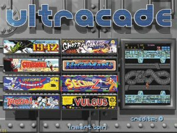
Here is a photo of the newer Ultracade version. I think things zoom in and out and the crazy broad does a little dance when you select a game. Very polished, but gawdy.
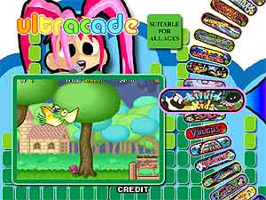
My goal was to use all the fine marquee, screenshot, and cabinet pictures available in the community to make an interface as attractive as the Ultracade is/was. The art available to us is higher quality (in resolution and color depth) than what they used.
I began modifying Mike's source a year or so ago. First I made it compile with free tools-- It compiles with MinGW now, in the exact configuration that MAME uses. Then I started modifying how it displays the games.
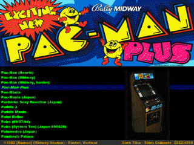
The default setup for Mike's CocktailFE has two modes. The first is it's default setup which is to show you a list of games in the Windows font of your choice, followed by a screenshot and a flyer on the screen in the upper left and lower left if it finds one in the directories specified. I changed this in UltraMame to show the list in a smaller area on the lower left corner, followed by the marquee across the top of the screen, and a user selectable photo in the lower right. Pressing a predesignated key will alternate between a flyer, screenshot, or cabinet photo. If you are missing the current choice, it automatically searches for the other photos for that game and displays them instead. Also, if you are missing the marquee, it will display a generic MAME one. (One is included in the binary archive for this.)
The second mode is a newer version of Mike's 'ImageBrowser' mode. It originally let you select the game by whatever photo was in the directory of the type you had specified, but I have expanded this. In my version, you select the game by the marquees on the left (if it's missing, the description at the bottom still lists the game) and a cabinet photo and screenshot on the right.
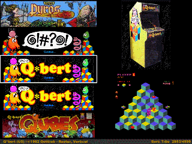
New features since Mike's version:
* Nearly complete rewrite of the interface elements, rom detection, graphic searching/loading.
* UltraMame now plays AVIs of attract modes (or anything you want) in the ImageBrowser mode.
* Random select. Press a predesignated button and you get a random game choice. (I need this to choose a game, personally)
* Change sort order. Press a predesignated button and you can sort the games by year of release (it's fun to scroll back to 1975 and play through history), manufacturer (so you could play all the Namco games in order), and of course by title. It subsorts each of these also, so if you're in 'year' mode it also sorts by manufacturer, then title, etc.
* I had to rewrite the file search algorithms as they did't work with either MinGW or Windows XP, not sure which.
* I added more sound effects. You can make sounds play when the selection is moved now, as well as a couple others I forgot.
New features in 1.8 (10/3/2006)
* Now automatically generates it's own game information file. If you update MAME, you must delete the "listinfo.dat" file so it can be regenerated. This requires a recent version of XML2INFO (see download link below)
* It will now play MP3 files in the background. I use the "Arcade Ambience" files you can find around on the net to add a nice effect. You can modify the INI file to turn this off (or not) when a game is selected. The default is to silence it.
* The AVI feature is in and working. It requires VFW codecs, which are gettting long in the tooth at this point. I may add DirectShow filter ability to it at some point, but I don't use this feature so it's way down the list. :)
Todo:
* Fix the rotation routines. (Sorry Mike!) I know this was originally designed for Mike's cocktail MAME machine, but I just need to sit down and fix the screen placement math for the other rotations.
* The new control keys (random, sort, change photo, and scroll +/- 100) aren't remappable in the .ini file. I will fix this soon.
Known bugs:
* There are probably bugs in the onscreen menu if you enable that feature in the INI. I haven't troubleshot this feature much because I don't use it in my cabinet. My children seem to screw up the frontend good when it's enabled!
The configuration sticks to Mike's original design of simplicity. Unzip the binary distribution into your MAME directory and go. You can change the dir entries in 'ultramame.ini' to point to the directories your photos are in if you don't use the MAME defaults. It will work with any version of MAME and automatically (and quickly) configures itself every time it is run. It works in any color depth or resolution, adopting whatever your Windows desktop default is. To take advantage of the high quality art available, I recommend 1024x768 in at least 16-bit color. Sounds can be removed by deleting the files, or rename any .wav file you want to play instead (you may want to stay away from long sounds for 'select.wav'). Also, you must have all your art (marquees, titles, screenshots, cabinets) unzipped and in separate PNG files in the directories, as UltraMame cannot deal with those monolithic zip files.
Here are the default controls:
Joystick Up/Down: Move up or down one game.
Joystick Left/Right: Move up or down one 'page'
MAME Button 1: Show DAT file entry (if enabled). Press again to exit.
MAME Button 2: Choose random game. It is intelligent and seeded properly.
MAME Button 3: Scroll up 100 games.
MAME Button 4: Change default photo choice (in ListView mode only, no need in ImageBrowser)
MAME Button 5: Change sort order. Alternates between title, date, manufacturer.
MAME Button 6: Scroll down 100 games.
Links
Here is where you get all the great artwork and data to use. without these guys, UltraMame wouldn't do much!
Marquees:
http://www.mameworld.net/mrdo/mame_marquees.html
This started it all for UltraMame!
Cabinets:
http://www.mameworld.net/mrdo/mame_cabinets.html
Flyers:
http://www.arcadeflyers.com
Great archive!
Screenshots:
http://crashtest.retrogames.com
This has title, ingame, and select screenshots.
History DAT:
http://fandemame.emu-france.com
Invaluable source of game info and history.
Mameinfo DAT:
http://www.mameworld.net/mameinfo
In case you want development notes in the frontend.
CocktailFE:
http://www.mikebillings.com
UltraMame is based on his code, with permission.
Articles
How Not to Sell Me Your Old Technology
As a hobby, I enjoy collecting and restoring old computers and video games from the 70's and 80's, sharing them, and displaying them at the Vintage Computer Festival in Atlanta.
For many years, I've posted a "Wanted: Old Computers and Video Games" message on Craigslist. I've met some very nice people and heard some great stories, and also (as you might guess) *tried* to deal with a lot of crazy people.
I thought I would write a guide about it that someone might find, but normally you can't reason with these people. I've tried the friendly nurturing approach, the "alternate evidence" approach (show sold examples of what they really have, and discuss fees, shipping, etc.). None of this ever works. They just decide I am trying to rip them off, when really it's the opposite. I will pay a fair price for nice equipment, but rarely will pay anything much for dirty untested junk. Unfortunately, most people just don't understand the difference.
Please excuse the overuse of sarcasm here. I know it bothers some people.
How *NOT* to Sell Me Your Old Technology
- You don't know or remember exactly what it is you have, and you can't send me pictures. You don't have a camera or a way to send pictures to me. Now, I know some people are "poor" and supposedly not everyone has a smart phone, but it sure seems like it. They seem to usually have nicer ones than mine.
- I don't want to "just come by the house" in a sketchy neighborhood where your heavily tattooed family member will be waiting in the front yard to lead me into your scary house "to look at it anyway". It won't matter, and you are making me uncomfortable.
- The blurry pictures you sent me appear to show a very dirty computer (?) with broken keyboard and/or missing parts. It's hard to tell, though. Are you trying to sell the old dirty high-chair and filthy stuffed animals and clothes with it?
- What you have is not a collectable or rare computer. A 1987 Apple IIe with black marker writing on it from an elementary school is not the same thing as that 1977 Apple II that went for thousands, and especially the Apple I that went for 300k. Even if you are only asking for half that, which absolutely is a "great deal" and you are practically giving it away.
- No, really. The one you are comparing it to on eBay is a completely different model that is more sought-after, is fully restored and working, but still is not "sold" - it's just the silly high price they have been asking for months. It has no bearing on this at all.
- Your 2007 Macbook or Madden 11 for the PS3 is not an "old computer". (My ad says before 1990 please)
- We agreed to something in text/email, but your boyfriend showed up with only half of it, and even wants more money than agreed. I'm pretty sure he is on meth and couldn't be hurt even if I was forced to try to defend myself. Thanks- glad I had my kids with me to pick up this lot.
- Some other guy already offered you twice what I did. Please take that offer- it is an awesome deal. Can you give me their number? I have a lot of stuff they might want to buy.
- Please, when we agree on a time and place to meet, don't disappear and not respond to my text message. I will wait 20 minutes longer than the time we agreed- sometimes people underestimate how long it takes to get somewhere. I will text you one time after that, then I am gone and your number banned. Why did you waste both our time? You texted me several times and took pictures...
- No, I will not respond back only by e-mail to 100percenthomegrown (at) gee mail dot com.
- I don't believe that you already sold it, but I can get another one like it on beezid.com.
- I am very sorry to hear about your troubles taking care of your sick/old mother/father/kids/grandkids. This is not how I give to charity.
- Do not send me a message asking how much I would pay for something, with a snide remark like "oh and I know what I have". Do you really think I will respond to this positively? I gaurantee you don't know what you have.
That's most of the common bad stuff. Here is what I do look for if you want a price that is fair to us both.
How to easily sell me your old computer
- It's still in the original boxes. This may not mean it's "new" or "never even used" but I will look at it and give my opinion.
- It still works, and you set it up to show me the games you loved as a kid and told me interesting stories about it. (Except now you might want to keep it to show your kids. Trust me, they won't care, but they might tell you it's worth a bunch of money. Obviously they would know best.)
- You have all the parts, cables, software, and manuals! Cool, you even still have the receipt. What you paid back then has no bearing, unfortunately.
- It was very well taken care of, and then stored away properly for the decades of slumber. This means it's not filthy and rusted inside from sitting in the shed next to your lawn mower.
- Bugs, mice, or anything further up the food chain have never taken up residence in it. If I am afraid to put it in my car behind me on the drive back home, I won't buy it.
- It belonged to an enthusiast, so it comes with many uncommon and possibly valuable and/or interesting accessories.
- It's a rare or sought after computer, even if just to "me". If it's something I don't already have, it is more valuable to me, and less if I do already have one. This might not be fair, but I'm sorry. Supply and demand. I don't need another Commmodore 64 or an Atari VCS with Combat and Pac-Man at this time, but someone else might. However, there's not a lot of us interested in buying these anymore.
- You will take a reasonable price for it. If you want eBay prices, and it's an identical setup in very nice working condition, I might pay the average of some recently sold auctions, taking into account all the fees and shipping costs. You may not understand it, but I am saving you a lot of hassle from auctioning it yourself. It's kind of a pain in the butt, even if you know what you are doing. I have cash *right now* and you don't even have to help me carry it to my car if you don't want to.
Articles
C64 Christmas Demos
Because it's difficult to get the Java emulator working correctly in modern times due to security concerns, I've uploaded all the demos to YouTube.
If you can manage to add this site to your Java security exceptions, you can still run them in emulation here.
Articles
Christmas Movie Decoder
Now, Hallmark and Lifetime plot lines are different. The Hallmark movies are generally "happy/feel good" while the Lifetime plots are generally have some tragedy involved. i.e. in Hallmark movies, nobody ever dies, in Lifetime movies- someone almost always does.
All of these movies typically use 1 to 3 of these plot lines mixed together.
Standard "real-life" plot lines.
- Single person A goes back to hometown during Christmas and meets "old flame" single person B. Their love is rekindled through the power of the "Christmas spirit(tm)"
- A small town, person, or some other business entity is bankrupt, and another person is sent in to to manipulate or take advantage of the situation with various nefarious intentions, which are always later discovered. The person will typically finally realize they are doing "wrong" and repent in the end due to the "Christmas spirit(tm)".
- Time travel, parallel universe, alternate life, or "wish granting" is experienced with return to reality and an epiphany at end that where they appreciate their original situation.
- Person has lost "Christmas spirit(tm)" but regains it through an epiphany. The loss can be for many sub-reasons including the tragic death of family member, or that the family member is just too busy with career to participate in family Christmas events. Realizes in the end they are missing out. This includes all variants of "A Christmas Carol" and the "Scrooge" character.
- Person A visits family for Christmas and hires, kidnaps, or just convinces person B to go with them to meet their family and act as their partner in order to avoid conflict or embarrassment. Of course, this always leads to "true love."
- A marriage/couple/family is broken up through divorce, separation, or death. Consequently, their children, pets, or other family members help them rekindle their love, or find a new love, usually through memories of past Christmas holidays.
"Santa organization" related plot lines.
I define the "Santa organization" as Santa, Mrs. Claus, their children, some of the more sentient reindeer, and the upper-level Elven handlers that organize Christmas.
- A marriage/couple/family is broken up (or has never met at all) and one or more members of the "Santa organization" help them meet or rekindle their love.
- Santa is "retiring" and has to convince indifferent offspring to take over. Some variations occur where it is not the "real" Santa.
- A member of the "Santa organization" goes to the real world for various reasons and must be returned in time for Christmas. Reasons may include retirement, a love interest, alternative career pursuits, or amnesia. In the case of retirement, for some reason Santa is required to be married. It is unclear to me why Santa must be married to fulfill his duties. Things always work out by Christmas eve, though.
- The reindeer are injured, the sleigh is broken, or simply won't function anymore due to lack of "Christmas Spirit(tm)". It must be fixed before Christmas eve.
There is also the broad "General skit comedy involving families at Christmas." I hesitate to include this because this is a cheat and includes many movies that are not in the "Lifetime/Hallmark" style. However, sometimes this is combined with other elements in these movies. Examples- "Christmas Vacation", "Christmas Story", and of course "A Madea Christmas"
Articles
The All New Christmas Movie Decoder
The "New" Hallmark Movies
Since my guide to Hallmark Christmas movies was written years ago, Hallmark has gotten very lazy. Larry Levinson may have retired and is no longer writing or producing them. There are almost no variations of the old themes anymore. All the new movies are unremarkable- they consist of only one plot now.
Woman works in the big city, goes home for the holidays for some reason (job related or otherwise) and runs into (usually) a past love who is wearing a flannel shirt and helping her parents with their slowly failing business.
The New Rules
- Everyone in these small towns are somehow seemingly very wealthy, with huge remodeled and finely decorated homes. Even if they are just running a small niche business in the town like a bakery or candle store. Everyone - even the local handyman.
- The big city job always includes a carefully multi-cultural friend/coworker and/or boss.
- If either love interest has a child, they will always disappear during key scenes. They are never a bother at all and usually just "not around" with no explanation. They also go to bed really early and you can go out on the town after they do.
- Everyone has a lot of time to relax at home with large glasses of wine, even if they are running a "busy" niche store.
- You must always wear a different coat in every scene, even if the luggage you brought could not possibly have held them.
- In all scenes, participants can touch- or brush against each other, but NEVER kiss. During the touch, the "magical sound" must be played.
- If characters are outside, it must snow lightly at key times - typically the magic "touching" time. This applies even if the movie is set in a location where it would never snow.
- When it does snow, nobody will ever actually be cold, and you will not see anyone's breath in the cold air. Even in "the mountains".
- Everyone is required to bring either coffee or hot cocoa when visiting anyone. The fancy coffee shop is an important hub in all small towns now.
Now, all that has to happen to make a complete Hallmark movie are the following scenes:
- The "big city job" scene where they reason the are going home originates. This can be writing an article about an event, interviewing someone, a competition they must attend, or just an illness or some problem with a family member. Really anything- it doesn't matter why. This is only 90 seconds of the entire plot.
- The "meeting" scene where they recognize the past love interest and realize they will be "forced" to work together for the remainder of the movie. Typically they will not be friendly to one another at first because of past differences or decisions.
- Cook/bake something together (Thanksgiving Dinner, Holiday treats).
- Home repair, remodeling, or decorating.
- "Romantic" walk through the town. This can consist of several scenes in these categories and includes:
Fall festival or Holiday festival
Farmer's market
Spontaneous snowball fight with each other and/or local children
Some contest. (Baking, cooking decorating, or pumpkin carving. They will usually compete against each other, but sometimes work as a team.)
Christmas tree lighting (The Christmas tree lighting will always be on Christmas Eve somehow. That is a town tradition wherever they are.)
Christmas Shopping Trip
Christmas Tree shopping (One will deliver it to someone's home and decorate it, usually with someone's child.)
- Visit to friend who has local niche business that somehow is either extremely profitable or about to go out of business and needs their job experience locally.
- The Holiday dinner with the family or friends of one or the other person where everyone knows they are a couple, but they will not acknowledge that.
- The "strife scene". This is the mutual misunderstanding where the person is going to return to the big city and not stay in hometown with their new "love" because they are going to take the promotion, or they thought the other one wasn't ready for a relationship.
- The resolution of the misunderstanding and the actual "kiss" to end the movie.
That's it! Sprinkle and sub in different actors and you have another one on the books. I could shoot 2 movies a day.
In fact, if you just reshot 2 or 3 scenes you could make a Valentines, Thanksgiving, "Fall", and Christmas movie out of it. If you have 2 or 3 sets of actors ready, you could make a dozen combinations on the same set and budget. Nobody would notice.Articles
MAME Cabinet
This long road to a home arcade machine began in about the Summer of 1992.
In the early nineties, myself and a group of friends began playing the arcade game "Mortal Kombat". My roommate at the time, Keith Kalet, discovered the game at the arcade in the student center at Georgia Tech (Atlanta, GA) and his description of the game was compelling, to say the least. We began playing the game regularly, and after we became good enough at the game to challenge other people, we used to search out the machines in different arcades to find other players we could challenge and learn from. Thinking back, we met a lot of really scary characters back then, and they usually got nicknames associated with them according to playing or personal hygiene style. There was "stinky", Raiden (the guy was tall and always played that character), the "p*ssy-kick" guy, the 'switchers' etc.
Anyway, around that time I discovered you could buy classic arcade games rather cheaply, and bought a number of games and boards in a single deal from a guy that had his parent's garage full of them.
Here was the haul around that time in 1992:
* Complete Millipede, which still
lives on in my parents pool room
* Pac-Man cocktail (monitor is bad), boardset works and is
actually "Pac-Man Plus" (official Namco)
* Two different Nintendo-style cocktails. One was Phoenix, which
was lost in a job-loss/left behind at the office incident by a
friend. The other was a Route-16 cocktail with a bad board, but
good monitor. I swapped in an extra Phoenix board I got in the
deal and it still lives on in my parents pool room.
* Haunted Castle boardset. Sold to a Castlevania nut in 1999 or
so, probably too cheaply. ($50) I was later told the board was
worth more due to Castlevania popularity but a little Ebay
research didn't bear that out. I didn't like the game.
* Punch-Out boardset
* Gyruss boardset
* Terra Cresta boardset
* An extra Phoenix boardset
* Galaga boardset THAT USED TO BE A DIG-DUG. Apparently, this was
a very rare conversion that I didn't know the significance of at
the time and stupidly traded to someone on the 'rec.games.video.arcade'
newsgroup for a "working" Galaga boardset. Of course,
when I finally got the boardset from him, it did *not* work. No
loss gameplay-wise, but that was before I had a digital camera
and all where I could have documented it. It was a single-board
Dig-Dug set with little parts of the board covered in epoxy, and
jumper wires going everywhere. All it did was power up with trash
on the screen, but is was a rare piece and I wish I still had it.
The guy I bought it from got it from guy he said did the mod
himself-- I remember he called him an "idiot genius".
:)
How much did this haul cost me back then, you ask. 4 complete machines, and a half dozen boardsets set me back only about $400.
Never was a deal like this to be found ever again.
Moving along, after I got married and moved back to Augusta in 1996, I got the home arcade bug again. I found that official Mortal Kombat boardsets could be had for a mere $50, so I jumped on that and bought a revision 2 board and marquee. I then set about figuring out how to play the thing without a cabinet, so I drug out the old Amiga 1084 monitor and got the video up, only to find that it isn't very fun to play arcade games by shorting the pins on the edge connector (although I'm sure I spent several minutes doing this). So, on to develop a controller for it. I bought all the buttons and joysticks from Happ Controls and went to Home Depot to see what I could find to build a control panel. I ended up getting some MDF that had a white formica-like side to it so it wouldn't be bare wood and could be wiped clean of the sweat of MK competition. I got enough to build a box about 4 feet wide, 1 foot high, and about 1.5 feet deep. This was enough by my estimation to work comfortably as a control panel for 2 players. I made the box, cut the holes, hinged the top, and then put all the wires and the board in the bottom of the box with an old PC power supply. It was an absolute mess of wires, the buttons were too far apart, and it was heavy, but I had arcade Mortal Kombat in my house!
After the box was built, my friend (Chris Hurley) and I realized that if the wiring was more standardized in the box, you could swap in other games and have a multi-arcade machine. I only had one other JAMMA board besides the MK (Haunted Castle) so that wasn't helpful. He came up with the idea of using old floppy cables (we work in a PC shop and had tons of them) wired up to female edge connectors for each board. This way you could plug in the female floppy connector to the male one in the box and swap games. Power was supplied by attaching a standard PC power connector to the female board connector also. Great idea! We rewired MK and got that working and were able to swap in Haunted Castle, then wired up one for a Moon Patrol boardset. That worked too, plus a bonus! We had a Kung-Fu Master boardset with the same pinout as Moon Patrol, so now we could play 4 different arcade games with about 2 minutes of swapping.
After a lot of neglect, I forgot about the project. I had thought of trying to make a PC joystick out of my control box at different points to play MAME, but after disassembling different keyboards at different times, it didn't look like you could easily solder the wires anywhere. As it turned out, I just picked the wrong keyboards, as many people have done it this way since then. Fast forward to about 2001 and I discovered the I-Pac. This little device was fairly inexpensive and let me connect the wires from my old control box directly to terminals on the board, then plug it straight into the keyboard port. What an innovation! No special drivers, and it was made for MAME specifically. I bought one and wired it up and was off and running with a huge control box in front of my T.V. The MK board came out and still sits on a shelf in my office. It really deserves more respect.
From there, another coworker got a few old complete machines for free, including a Pac-Man, Carnival, and an *old* Depth Charge. The Carnival cabinet seemed to be the most generic and easy to get apart, so I was able to get it from him to build my own real MAME machine. I removed all the buttons and controls from my box and destroyed it (without taking pictures, d'oh!) and relanded them on a new control panel that fit on the Carnival. Now, Carnival is NOT a wide cabinet-- it's only a 19", so 2-player fighting games are tight quarters, but it works if you're friendly enough with your opponent. (And they aren't "stinky" of previous fame). I bought a cheap 20" TV with S-Video inputs from Wal-Mart, and got an old ATI Rage card with video out off Ebay and was very disappointed with the picture quality overall. I guess I expected more from the TV, as it was great for DVD's and the like, but looked terrible with MAME at the close-range an arcade monitor needs. On top of that, the ATI is far too slow to handle anything like hardware stretching and D3D modes, so it had to go. I scrapped that setup and bought an old IBM Workstation 20" Trinitron (P200) display from a local PC liquidator, and Chris gave me his old Kyro II video card. This was the ticket. First of all, the monitor is in a black case, so you can't see that it's a PC display behind the bezel and front glass. Secondly, it handles every video mode perfectly, so even vector games look good. Thirdly, it's an old monitor with a *slight* convergence problem, so all those classic games look authentic! :)
Now, this cabinet is ugly. It's entirely wood grained with no art of any kind, so I guess Sega/Gremlin weren't into stylish cabinets back then. I know it's original because Carnival has all the little stickers inside, as well as the complete manual and everything (hand typed, no less). This cabinet did end up being a good choice overall, though, because it has several switches behind the coin door, as well as a volume control. The cabinet already had some controls inside the coin door and all of these were retasked to power, reset, and volume for the PC and speaker/subwoofer combination. The coin doors are faithfully wired to the I-Pac, so you must bring quarters to play!
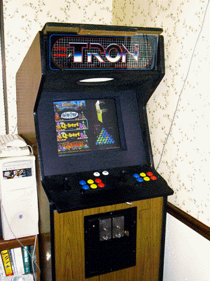
It was originally a Pentium 3 @ 866MHz, which was *barely* fast enough to play emulated Mortal Kombat. It did not have nearly enough CPU speed to run MK2 or MK3, though, due to the DCS sound system. I recently upgraded it to an AMD Athlon 1800+ and it runs them all at 100% now.
Disk Preservation Project
Floppy Disk Preservation Project
Of course, to reach these goals, we need your help. This software exists only on magnetic media from the 1970's to the 1990's, and as such has been disappearing into attics, yard sales, and landfills for decades. Floppy disks were never made to last a lifetime, as many of us have found when trying to archive them. Even disks that were stored and cared for by their owners all these years can have pretty high failure rates.
You can help preserve them for our own and future generations in a number of ways, so please use the contact form for details or ask in the forums.
Disk Preservation Project
How Floppy Disks Work
Floppy Disk Drives
A floppy disk drive consists of a spindle motor attached to a mechanism that grabs the center of a disk and rotates it at certain speed which is measured in RPM, or rotations per minute. A digitally shaped analog signal called a "flux" is either "played" or "recorded" onto a magnetic floppy disk using a read/write head. The head is attached to another motor called a "stepper" that allows it to move along the surface of the disk into 40-80 fixed positions. On most drives, the motor rotates at 300 RPM for "double density" or 360 RPM for "high density" drives. The head detects these changes in the magnetic flux of the disk as it spins, amplifies them, and sends then to an attached controller board. The controller board refines this signal into digital data that is sent to the host computer. Disk drive sizes are most commonly 8", 5.25", or 3.5", although some other odd sizes exist.
Floppy Disks
A floppy disk consists of a mylar-coated magnetic surface that is rated to store a certain number of flux reversals (from positive to negative, or negative to positive) within a defined area of the surface at a certain speed, at a certain TPI (tracks per inch, which is how close they can be to each other), at a certain coercivity (which is how strong the signal is). 5.25" and 8" disks are in a soft plastic shell that is stored in a sleeve for protection, while 3.5" disks come in a hard plastic shell for durability. Despite the hard shell, 3.5" disks are still considered "floppy". Drives can be either "double sided" meaning the can use the front and back of the disk at the same time, or "single sided" meaning only one side is used. Since most disks are double-sided, you can typically flip the disk over and use the other side on single-sided drives. Double density and high-density disks have different coercivity levels and cannot be interchanged, or the data will not be able to be written properly.
Magnetic Flux
The drive head detects and creates polarity changes in the magnetic flux on the surface of the disk, which is interpreted by the drive as a binary 0 (no change) or a 1 (polarity change) over a specific period of time. Because the data recorded by one disk drive must be able to be read in another as well as the limitations inherent in analog magnetic recording, the flux stored on the disk has to be recorded so that it can be read back in exactly same way it is written. This is called "clocking" and means that we have to have set timing patterns for the flux transitions to occur. We can't go very long with no flux transitions, because then the clocking is lost and the drive will turn up the automatic gain control (AGC) and amplify the signal until it becomes "noise". You can simulate this by turning up the volume in your stereo while playing a blank tape. In most controllers, this causes undefined behavior until the next flux transition is seen, and is usually decoded as "random" data by the controller (in the sense that the data is never the same twice) due to drive speed and other environmental factors such as humidity and temperature. A good example is when you try to read a new, non-formatted disk. If you try this, you'll get "random" data caused by this anomaly in the drive hardware because there are no flux reversals on a non-formatted disk.Encoding
Because of the need for proper clocking, data is encoded so that it cannot violate the rules. The different encoding types include GCR (Apple, Commodore), FM (Atari 8-bit, many other early systems), or MFM (Amiga, Atari ST, PC, many others). These encoding rules, whether implemented in firmware or software, dictate that the data is written in a way that it can be read back exactly the same each time.
Tracks
The concentric circles on the disk that the flux reversals are recorded on are called tracks. The stepper motor can move and stop at different tracks on a disk, typically around 40 in total for single/double density, and 80 for high density.
In most 40-track systems, the head is too wide to write to just one track at a time, so even though the drive can step to those tracks, every other track may be skipped by the firmware. The common terminology for the step in between each track in this case is a "half track" and a specific track would be referred to as (for example) "35.5" instead of the actual track (which would be 71).
Sectors
On most disk systems, tracks are further divided into sectors, which are sections of each track typically divided by "sync" marks. A sync mark is a special pattern on the disk that tells the controller where the data starts. Different drives store data at different "bit densities" (essentially clock speed rates of the read/write hardware). However, most systems are locked to a specific density on all tracks.
Disk Preservation Project
Disk Database
C64PP Disk Database
A catalogue of preserved Commodore 64 originals. Search by title, publisher, protection or contributor, and sort any column.
Key: cifo means "clean image from original" — there is no reason to believe it isn't a good read of the disk. Verified is the number of verified sets for that title.
Loading disks.json…
Disk Preservation Project
C64 Serial Registry
Thanks for visiting the Commodore 64 serial registry. This page is dedicated to keeping track of the C64s that are still alive and well and in the hands of collectors around the world. Perhaps we can find who has the earliest and the latest serial numbers once and for all?
This data is collected on the honor system, so please don't enter false or known incorrect information — that helps nobody. Please do not enter modern reproduction serial numbers from new boards.
Loading c64.json…
Disk Preservation Project
NIBTools
(C) 2004-23 Peter Rittwage, Markus Brenner, and friends
Based on routines from MNIB, which is (C) 2000-04 Markus Brenner.
The C64PP project originally started when I took Markus Brenner's GPL source for MNIB and figured out how to add a routine to make it write the disk images back out to real disks. This part turned out to be easy, but I opened up a can of worms that has taken lots of time to perfect. :)
Since then, I have actively developed the program, adding in various routines to handle foreign disk formats and protections, as well as improving the read routines and conversion tools. At this point, we can read and reproduce pretty much any disk that was/is possible with 1541 drive hardware. Most converted protections will work in the emulators as well, with a few exceptions.
I have been handing out the test versions over time to contributors (of time, advice, disks, and images) and at this point it is pretty stable. Markus as well as many other people from around the world have kindly contributed their time and expertise to expand this into a powerful tool. I would never have gotten out of DOS and into Windows/Linux without Tim Schurmann, Nate Lawson, and Spiro Trikaliotis.
You can always download the latest src and binary builds here.
Note the DOS executable requires an older, slower PC, it will not work on modern PC's due to timing issues.
Special thanks for code, bug reports, and suggestions:
Tim Schurmann, Spiro Trikaliotis, Nate Lawson, Jerry Kurtz, Matt Larsen, Mat Allen (Mayhem/UK), Wolfgang Moser (Womo), Quader, Jani, Curt Coder, Roger Cousin, Christian Hedemann, Steppe, Victor Castro
(and many more I'm sure I've forgotten...)
The NIBTOOLS DOS version contains code originally based on CBM4Linux from Michael Klein and Andreas Boose.
Disk Preservation Project
Contact
Questions, corrections, contributions or offers of old disks and hardware are all welcome.
E-mail me at peter@rittwage.com. For registry entries, the C64 entry form prepares a complete message for you.
You can also find me on Facebook.
Copy Protection
C64 Copy Protection Methods
Many different protection methods were developed over the years in a cat-and-mouse game with those that wanted to make a copy of their own (or a friend's) disk. The methods steadily increased in complexity, but whether or not the protection was easily duplicated or not, a way was always found to make a working backup. Descriptions of the drive hardware itself, as well as many of the methods that different companies employed to keep the disks from being copied, are found here.
Background
The Commodore 1541 disk drive is a stand-alone computer that talks to the C64 through a somewhat slow serial port. It is based on similar technology to the C64 itself, employing a 6502 CPU, two 6522 VIA I/O chips, and only 2k of memory (the limitation of which will be discussed later). It came with either an Alps or a Newtronics 5.25" double-density floppy mechanism, both of which are functionally equivalent. This mechanism requires double-density 48 track-per-inch 5.25" magnetically-coated Mylar disks.
Tracks
Tracks on the disk are organized as concentric circles, and the drive's stepper motor can stop at 84 different locations (tracks) on a disk. However, the read/write head on the drive is too wide to use each one separately, so every other track is skipped for a total of 42 theoretical tracks. The common terminology for the step in between each track is a "half-track" and a specific track would be referred to as (for example) "35.5" instead of the actual track (which would be 71). Commodore limited use to only the first 35 tracks in their standard DOS, but commercial software isn't limited by this. Most floppy media is rated to use 40 tracks, and the drives usually have no trouble reading out to track 41, although some will bump and not get past 40. Most software does not use any track past 35 except for copy protection, but alternative DOS systems like Speed-DOS used all 40 tracks in their own DOS implementation.
CBM drives have no way in hardware to detect which track it is on, or where it is on any particular track. The software must handle these functions which leads to many of the more creative styles of copy protection. 5.25" disks contain an "index hole" which is the little hole you see diagonal to the hub ring on your disks. If you spin the disk around in the shell, you'll see that there is a hole in that, too. Other drive manufacturers used an optical sensor to detect when this hole passed by, which would signal the start of a track. Commodore didn't implement this, so we have to use marks that are written to the disk during formatting. Later copy protection implementations took advantage of this because the devices used to master original software are not typically a 1541. They could master the disk using the index hole so it was lined up perfectly. As far as knowing which track we are on, the only way to tell is again in software. Each sector on a track has a header that contains (among other things) the track number. DOS will read this whenever it needs to access a track so it knows how many times to step the motor to get there. The famous "drive-knock" is the software hack that Commodore employed to reset the drive to track 0 when we couldn't find any sectors. In this case, the motor is stepped out as far as it can go until it physically stops (causing the knocking noise) which guarantees the head is on track 0. Unfortunately, this behavior is what is blamed for the terrible drive alignment problems of the early mechanisms.
Sectoring
Tracks are further divided into sectors, which are sections of each track divided by the aforementioned software-generated sync marks. The drive motor spins at 300rpm and can store data at 4 different bit densities (essentially 4 different clock speed rates of the read/write hardware). The different densities are needed because being round and the motor running at a constant speed, the disk surface travels over the head at different speeds depending on whether the drive is accessing the outermost or innermost tracks. Since the surface is moving faster on the outermost tracks, they can store more data, so they use the highest density setting. Consequently, the innermost tracks use the slowest density setting. Because we're recording at a higher density, more sectors are stored on the outer tracks, and fewer on the inner tracks. There is nothing stopping the hardware from reading/writing at the highest density across the entire disk surface, but it isn't generally done due to media reliability, and slight speed differences between drives. The media itself is only rated for a certain bit rate at a certain speed.
Drive Internals
The drive head, at its lowest level, can only detect and create polarity changes in the magnetic flux on the surface of the disk, which is interpreted by the drive as a binary 0 (no change) or a 1 (flux polarity change). Because of the specifics of the hardware used to access this magnetic flux, the bits stored on the disk have a couple of limitations (or "features"). This flux detection circuit feeds dual 4-bit "shifters" which convert the bits (detected from the flux changes) into a whole byte (8 bits), much like a serial port does. If this circuit detects ten '1' bits in a row, it knows that it has read a "sync". This sync is what tells the software that we're about to get a series of bytes representing either a sector header or sector data right after the sync ends. An anomaly of this circuit is that it if it runs across three or more '0' bits in a row, it will clock in an extra '1' bit on each 4-bit shifter that doesn't really exist on the disk. When this happens, the drive can lose framing, meaning the data is bit-shifted after this due to our new phantom bit. It will shift a new phantom '1' into the LSB once in a while (and wrap it around) according to drive speed and other environmental factors until the next real '1' bit is seen. This data is "random" in the sense that the data is never the same twice due to drive speed (and humidity, temperature) fluctuations. A good example is when you try to read a new, unformatted disk. If you try this, you'll get "random" data caused by this anomaly in the drive hardware because there are no flux changes on a blank disk. To the 1541 hardware, this is all '0' bits. Because of this weakness of the hardware, all data is stored on the disk in an encoding system called "GCR". This encoding rules ensure that there should never be more than two '0' or more than nine '1' bits in a row in the data itself. This "feature" of the '0' bits is of course taken advantage of in some later copy protection schemes. (Rapidlok, Mindscape, and Datasoft, for example)
Differences between a "fast copier" and a "nibbler"
Copy programs have been referred to by these two different types since the first nibblers came out on the Apple II. A little more background is required in how the disk is structured to explain the difference. A track is broken up into a number or sectors, which are further broken up into a header and data portion, and each of these has a filler "gap" at the end to give the drive software time to change modes. The actual GCR data is structured like this:
SYNC (at least 10 bits of '1' in a row)
header 0 (8 bytes in DOS)
header gap (usually 5 filler bytes, longer for nibbled copies)
SYNC
sector data 0 (CBM DOS uses 260 bytes)
sector gap (usually 5 filler bytes, longer for nibbled copies)
SYNC
header1... (and on until the end of the track)
tail gap.. (unused bytes until it wraps back around to header 0)
Fast copiers
A "fast copier" reads the source disk on a sector-by-sector, normal CBM DOS level, and recreates them onto a new formatted disk. This method produces a "clean" copy of the disk, but does not copy any protection since it will ignore any sectors with errors, or any sectors that don't conform to the format explained above. It was really only used when we weren't going to try to copy the disk protection, but rather apply a "parameter" to the disk. A "parameter" is nothing more than a patch program that was run on the backup disk to remove the check for copy protection. Fast Hack'em, Kracker Jax, and later Maverick were all very popular copy programs that utilized parameters.
Nibblers
A "nibbler" works at a lower level and will duplicate the actual headers and data, whether or not they are in CBM DOS format. It does have limitations, though. First, they don't duplicate the header or tail gaps or the original sync length, but rather creates its own, so protections that hide (seemingly unused) bytes in the gaps or count sync lengths won't be duplicated. Secondly, the drive only has 2k of RAM, but a whole track is up to 8k, so it must be broken down and read in several passes, then stitched together on the destination disk. Protections that exploited this would use a sector or track larger than would fit in RAM at once, making it impossible to copy. Later, there were hardware solutions to this, such as extra drive RAM and parallel ports.
Protection Methods
Intentional Disk Errors
This protection consists of a disk error purposefully placed on a sector or an entire track, then its existence is checked for in the program. If the error isn't found, it assumes this is a copy and not an original disk. In the beginning, there were no copy programs except Jim Butterfield's "COPY/ALL" that came on the 1541 test/demo disk. This program could not reproduce these errors (and even if it could, it took *FOREVER* to copy even regular disks). Like most protection, though, it only foiled casual copiers. Early, clever crackers figured out how to scan an original disk for these and the methods for recreating the errors were not difficult. Soon after, programs like "Copy II/64" came out that could effortlessly detect and reproduce these errors which marked the end of this era. Most publishers of disk software used this method before late 1984.
Track Skew
This protection involves placing a track on the disk that is a specific skew offset from the one before it.
The protection is checked by the program by stepping the heads between the tracks and checking that the exact timing is what is expected between them. If the timings are wrong, it knows this is a copy.
Fat Tracks
Fat tracks are a special case of track skew protection where two copies of a track are stored on sequential tracks of a disk with no skew, so they appear as one "fat" track. Electronic Arts used this protection from about 1984-1985, and Activision used it and called it "XEMAG" for many years. These protections stand out from most other early methods because they could *not* be copied 100% reliably even with *any* nibbler. As mentioned earlier, the 1541 has no way to know where it is on a track. Therefore, it has no way to know where it is in comparison to any other tracks on the disk. For this reason, it is impossible to reliably write these tracks out perfectly aligned with a 1541 drive. This was an idea that was greatly expanded on in future protections, but it still stands the test of time and still can't be duplicated reliably without using the index hole sensor. It is of note that it *is* possible to "unreliably" copy these, as you can just try over and over again copying just these two tracks until you happen upon "close enough" alignment for it to work. NOTE: Slowing your disk drive motor down to 298.5rpm or less seems to allow EA and XEMAG skew-protected disks to pass the protection checks.
Half Tracks
Along the same vein as fat-tracks, it was of course possible to read and write to the usually skipped "half-tracks" instead of the normal tracks, if you weren't worried about storing any data on the normal tracks. This foiled many copiers because they didn't search for and copy these half-tracks by default, so they instead got garbled, invalid mixes of the "real" data when trying to read the tracks as if they were normal. Copiers later came out that could scan for and detect these and copy them properly.
There are very few titles which require half-tracks to work, but there are a couple.
Extra Tracks
This protection simply relies on using disk tracks beyond 35. Normally, copy programs default to copying only tracks 1-35, so these are missed. I am not sure why the programmers didn't extend this by default, except maybe some would lock up reading unformatted tracks, which these tracks usually are. Sometimes these tracks contained actual DOS-formatted data, but usually they were just "key" tracks.
They could sometimes be nibbled, other times they could not, because they were combined with other protections.
Changed Bitrates
As mentioned above, the bitrate is normally higher on the outer tracks and lower on the inner tracks. Some disks were protected by using a non-standard bitrate on different tracks. Copiers later came out that would scan for the correct density and these disks could be copied that way.
"Signatures" in the Header, Sector, or Tail gaps
As mentioned above, when a disk is copied with either a fast copier or a nibbler, the gap data is not copied directly. Copiers would commonly just fill this space with 0x55 bytes. Gaps are "inert" bytes, meaning they aren't normally used as data, but just a space filler that is ignored by DOS. There are some protections that check for specific bytes here, or even the length of the gaps, and know they're a copy if it's different. This protection can be copied with hardware solutions that either extend the RAM in the drive to 8k or add a parallel port so it can read and write the entire track in one pass.
Long Sectors
As mentioned above, the drive has only 2k and can't fit an entire track in RAM, so it must be broken down into 4 parts and stitched together on the destination disk. If you make a sector longer than will fit in RAM, it can't be copied with a normal 1541. This can be copied with hardware solutions that either extend the RAM in the drive to 8k or add a parallel port so it can read and write the entire track in one pass.
Custom Formats
These usually depend on the long sectors trick above to be successful, but they also entail changing the way that GCR is interpreted in a custom DOS. If you write your own DOS, you can use your own disk format entirely, ignoring common sync, gap, header, and data conventions altogether and use whatever you want. You only have to adhere to the GCR limitations of sync and no more than two '0' bits in a row, but even that didn't stop later innovations.
Long Tracks
Normal drives spin at ~300rpm and can "write" data at the highest density up to about 7700 bytes per disk track. However, the drive can "read" more than that, within some margin of error depending on motor speed. Some protection took advantage of this and put more data on the track than could be written back out at the normal speed, making it difficult to copy. Some copiers would "trim" the data in as non-destructive way as possble (reducing sync length and gaps) and it was also possible to slow down the disk drive to foil this, but usually these disk relied on a combination of other protections as well. A good example of this is the later Epyx Vorpal protection/loader.
Sync Counting
A sync mark must be at least ten '1' bits long to signal the drive hardware that we're about to see GCR data. However, sync marks are usally much longer than this (40 bits) and have no limit to their length. When copying a disk with a software nibbler, sync has to be reproduced rather than copied, since it is more like a "signal" than actual data stored on the disk exactly. For this reason, the length of a sync is also somewhat dependent on drive speed and will vary a little. Some protections count on this and measure the lengths of the sync, or the occurances of sync on a track, to see if they match, and know they're a copy if they don't. Microprose used this method on some disks, and in fact "trimming" the sync will fail the protection checks.
Track Synchronization
We mentioned above that the drive doesn't use the index hole, so lining up the tracks on the disk is nearly impossible on the 1541. Since disks weren't usually mastered with a 1541, but rather with machines that could do track sync based on the index hole, protections took advantage of this in different ways. They would move to a halftrack or the next track in the middle of reading to see if the data that should be there exists. If it doesn't, it knows that it's a copy.
Bad GCR/Unformatted/"Weak Bits"
We mentioned before that if the drive sees 3 or more '0' bits in a row, it clocks in a random '1' bit occasionally. Single occurrences of this sequence won't always make it lose framing, it will return a "random" byte, but more than a couple in a row will result in the drive losing framing and reading these "random" bytes until it sees the next real '1' bit. Most nibblers can't duplicate this, so protections checked a byte purposefully on the disk somewhere and if it reads the same thing over and over, it knows it's a copy. Later copy programs did try to reproduce this-- Burst Nibbler detects and writes a 0x01 byte in their place, which is enough to fool most software into working. It is also worth noting that this is the same thing as unformatted tracks, so you'll see this a lot when imaging in new disks. Since the disks aren't usually duplicated on a 1541, and the tracks aren't always as long as they could be, the machine leaves unformatted data on the end of all the tracks, causing a lot of software to appear to have these on every track, and making it difficult to verify the tracks from disk to disk, since the bytes will be different from sample to sample. I have several disks from Synapse that have unformatted parts on all the tracks, and none of the tracks above 25 are formatted at all! I've seen this used in Rapidlok (all titles), later Microprose disks, and Datasoft (Bruce Lee, The Goonies, Mr. Do!)
Signature (Key) Tracks
This protection is seen from time to time and revolves around a track being mastered in a non-standard way. It can be all sync '1' bits (which we call a 'sync-killer' track), unformatted (or all '0' bits), filled completely with some other byte, or filled a special byte sequence like EA's PirateSlayer, or a combination of all of them. These tracks generally foil most all copy programs because they either cannot handle all or long sequences of '1' or all '0' bits, or they are just read incorrectly/out of framing. We can remaster most all of these with our development version of 'nibtools'.
No SYNC
One of the meaner protections that came about used tracks on the disk that had *no* sync marks. Most copiers cannot read these tracks and just detect them as empty. The later Epyx Vorpal loader uses this technique.
"SpiraDisc"
This protection name hails from the Apple ][ and isn't exactly the same, but similar. It is found on one commercial disk that we've seen- "Bounty Bob Strikes Back". The data on the first 14 tracks or so are written half on the regular track, and half on the next half-track, all aligned perfectly. The game loads by stepping out to track 1, beginning the load, then stepping a half track at a time all the way in until the game is loaded. If any deviation in time from where it expects the data to be and when is found, it fails. I've never been able to make a working copy. Jim Drew of UU developed a custom copier for the SuperCard+ board that is able to copy this protection, but it's really more of a custom "remastering" program.
Copy Protection
Apple II Copy Protection Methods
Copy Protection Used on Apple Computers
General
The first protection of floppy disks consisted of changing the address marks, bit slip marks, data marks, or end of data marks for each sector. For example, Apple standard sector markings were:D5 AA 96 for the address mark. That was followed by track, sector, and checksum.
DE AA EB concluded the address header with what are known as bit slip marks.
D5 AA AD was used for the data mark and the end of data mark was another DE AA EB.
Changing any of these marks required fairly minimal changes to the software routines in Apple DOS which read and wrote the floppy disk, but produced a disk that could not be copied by any of the standard copiers, such as Apple's COPYA program. Some protection schemes used more complicated systems that changed the marks by track or even within a track.
Locksmith
By 1980, the first nibble copier, Locksmith, was introduced. These copiers reproduced copy protected floppy disks an entire track at a time, ignoring how the sectors were marked. This was harder to do than it sounds for two reasons: firstly, Apple disks did not use the index hole to mark the start of a track; their drives could not even detect the index hole. Tracks could thus start anywhere, but the copied track had to have this "write splice", which always caused some bits to be lost or duplicated due to speed variations, roughly in the same (unused for payload data) place as the original, or it would not work. Secondly, Apple used special "self-sync" bytes to achieve agreement between drive controller and computer about where any byte ended and the next one started on the disk. These bytes were written as normal data bytes followed by a slightly longer than normal pause, which was notoriously unreliable to detect on read-back; still, you had to get the self-sync bytes roughly right as without them being present in the right places, the copy would not work, and with them present in too many places, the track would not fit on the destination disk. Locksmith copied Apple II disks by taking advantage of the fact that these sync fields between sectors almost always consisted of a long string of FF (hex) bytes. It found the longest string of FFs, which usually occurred between the last and first sectors on each track, and began writing the track in the middle of that; also it assumed that any long string of FF bytes was a sync sequence and introduced the necessary short pauses after writing each of them to the copy. Ironically, Locksmith would not copy itself. The first Locksmith measured the distance between sector 1 of each track. Copy protection engineers quickly figured out what Locksmith was doing and began to use the same technique to defeat it. Locksmith countered by introducing the ability to reproduce track alignment and prevented itself from being copied by embedding a special sequence of nibbles, that if found, would stop the copy process. Henry Roberts (CTO of Nalpeiron), a graduate student in computer science at the University of South Carolina, reverse engineered Locksmith, found the sequence and distributed the information to some of the 7 or 8 people producing copy protection at the time.For some time, Locksmith continued to defeat virtually all of the copy protection systems in existence. The next advance came from Henry Roberts' thesis on software copy protection, which devised a way of replacing Apple's sync field of FFs with random appearing patterns of bytes. Because the graduate student had frequent copy protection discussions with Apple's copy protection engineer, Apple developed a copy protection system which made use of this technique. Henry Roberts then wrote a competitive program to Locksmith, Back It UP. He devised several methods for defeating that, and ultimately a method was devised for reading self sync fields directly, regardless of what nibbles they contained. The back and forth struggle between copy protection engineers and nibble copiers continued until the Apple II became obsolete and was replaced by the IBM PC and its clones.
Copy Protection
BanguiBob's Rapidlok 1
Copy Protection
BanguiBob's Rapidlok 2
Copy Protection
BanguiBob's Rapidlok 6
Copy Protection
PirateBusters, Inc.
Interview done by Kevin M. in Oct-Nov 2008
The following is an interview of the 3 guys behind PirateBusters Inc:
Kevin P. Pickell, Brian R. Niessen, and Kris Hatlelid.
They did copy protection for C64 software, and also were involved in game
development (think Test Drive, Gran Prix Circuit, Frantic Freddie etc)
The interview was done via email and compiled as shown below. For some topics I
asked follow-up questions, or questions to certain individuals (i.e "To ______"
prefixes the question). Any of my comments or additional notes are enclosed with
< >.
Keep in mind that considerable time has passed since these guys did C64 stuff,
but they were all gracious enough to respond to my questions. I would like to
say "thank you" to Brian, Kris and Kevin for helping me preserve a little bit of
computing history. - Kevin M.
What led you to C64 software development? (instead of other systems like Apple,
Atari, IBM etc?)
BRIAN:
My first computer in 1976 was the Commodore PET, then the Commodore VIC-20. I
beta tested the C64 (Mine first one was in a VIC-20 case).
KRIS:
We had PET computers in the schools, so it was kind of brand recognition.
Additionally, I had a Vic-20.
How did you do software development for the C64? Were there any cross
development systems or special hardware used?
BRIAN:
Originally I used the 'off the shelf' tools, but then Kevin Pickell and I
created a system called "TSDS - Total Software Development System" that included
an editor, assembler, sprite editor, etc.
KRIS:
Sysres, TSDS, later an amiga cross assembler system.
KEVIN P:
We used a 6502 macro assembler that I wrote originally on the Pet and then over
to the C64 (it was called TSDS, for Total Software Development System). During
the DSI/EA time I converted it to run on the Macintosh and we used Macs for C64,
Apple and Atari development.
What made you get involved with disk drive stuff (disk utilities, etc)?
BRIAN:
Curiosity and need - When I had my PET, I had the 8250 floppy drive (1 MB of
storage on a floppy in 1978 or 1979), and one day the power went out as I was
writing a file. It destroyed the directory track on the floppy, and to recover
the months of work, I had to learn how to rebuild the directory track by hand.
That was the beginning of realizing the "power" of the external floppies - they
had multiple CPU's, etc.
KRIS:
I wrote a game and wanted to protect it (Frantic Freddie). Greg Larson actually
was instrumental in that, and with me being a programmer in general.
KEVIN P:
I was always interested in speeding up things and since the disk drive was so
slow I was very interested in speeding access up.
How did you learn about the inner workings of the 1541 (did you refer to books
like "Inside Commodore DOS" etc or just spent a lot of time hacking?)
BRIAN:
Lots of books, but a LOT MORE time disassembling. One weekend in about 1983 I
invited a bunch of hackers to the University of Victoria where I rented a room,
and we disassembled the entire 1541 ROM set and determined how it all worked.
KRIS:
Rom disassembly mostly. Started with the 4040 drive, and moved into the 1541.
KEVIN P:
Through a friend who worked with Commodore on a few projects I was able to get a
printout of the source code for the 4040 disk drive (this was a Commodore PET
drive). The 1541 code is very similar and by reading the code I was able to
understand a lot about how the drive worked.
How did you become involved with copy protection for the C64? (How did your
involvement with Piratebusters Inc start/end etc?)
BRIAN:
PirateBusters was Kevin and I initially, then we invited Kris Hatlelid into the
fray. How it started - Kevin and I were known "breakers" who thought that there
was a better way.
KRIS:
I wrote some stuff to protect Frantic Freddie. Later, I theorized about a
protection system with Brian Niessen at a trade show in Toronto, and I joined he
and Kevin a little while later.
KEVIN P:
Pirate busters was Brian Niessen, Kris Hatlelid and myself. Kris and I had few
different ideas for copy protection that we had done for some of our own games
and Brian was our "Sales Guy". We decided to shop it around and it was installed
on a half dozen or so games.
How many games were protected with PirateBusters? (I know "Beach Head 2" by
Access has that nice piracy message screen that came up on a copy).
BRIAN:
How many - Honestly, don't remember - we licensed to EA, Access, and a couple
other companies and can't remember which games anymore - I know that it was also
used on .... what was the name, the one where you had the miners on Mars or
something. I saw it in a local used-computer-store here the other day
actually. I should go buy it.
KRIS:
Dunno, sorry. ;-)
KEVIN P:
I think we did a couple of games for Sydney Development and a few for EA, and I
guess a few for Access but I don't remember.
How many versions of PirateBusters were there? (BH2 displays "Protected by
PirateBusters 1.0FL" (Additionally you wouldn't happen to have any source code
or work disks lying around, would you? ;-)
BRIAN:
I don't recall. Don't have any code anymore.
KRIS:
I don't know. Sadly, I don't have any of my old source code. I did find the
cartoon that I wrote for PirateSlayer though, that was hillarious <Note: see
further on below for more info from Brian on the "cartoons">
KEVIN P:
I don't remember.
What were the sorts of technical things you did or checked with your protection
schemes? (Bad GCR, gap bytes, no-sync tracks etc). What did you do to discourage
prying eyes? (encryption or other tricks)
BRIAN:
We did things like spiral tracking (like a CD) on the floppy drive. We also did
load-under schemes, where we loaded code under the roms, and then when the
loading wrapped around $FFFF and hit $0000 it kicked out the roms, and started
our code (which was right under the ROM load code) - this was Kevin's piece' de
resistance ;)
KRIS:
Mostly it was no sync variations and track alignment variations.
KEVIN P:
The one I remember the best was we had our own "wide track" with custom sector
format. The track was from 36-38 so it was actually 3 tracks wide and we would
make the code randomly check by seeking anywhere from 36, 36.5, 37, 37.5, 38 and
then looking for our data there. The sector on that track was our own 1024 byte
format ( normal sectors are 256 bytes ) with our own custom non-standard sync
header. The unique thing though about this protection was that we didn't just
check for it's existence, but we actually loaded code from that sector and that
code was integral to the startup process.
As for stopping prying eyes, the one thing I did was to use the 6526 timer chip.
I would have a loop of code that turned on the chip to start counting, then I
would read the values from the chip as they were changing (they incremented
every cycle) and exclusive or'ed them with the code directly following my loop.
Once the code had finished exclusive or'ing the code it continued to execute the
code that it just un-encrypted and it did the same process all over again about
8 or 9 times before the final code would be un encrypted and executed. The idea
was to stop two things, first, if they used a debugger and placed any
breakpoints then the values from the chip would continue incrementing and there
would not be a match and the unencrypted code would be garbage. Second, they
could not put a breakpoint at the first instruction after the loop since that
value was changed by the decrypt code and would no longer be a break
instruction. It would certainly stop an amateur hacker but not someone who was
an expert. The other thing we did was use a bunch of the undocumented opcodes
that did give consistent results and this would also slow down someone trying to
read the code.
Did you ever disassemble copy programs to figure out their limitations in
devising protection schemes? (Or evaluate other hardware tools like parallel
drive copying tools (Burst Nibbler, 21 second backup etc) or drive ram expansion
(RAMBOard/Supercard etc)
BRIAN:
Definitely.
KRIS:
No, just tried them. I did discover later that some people actually used
debugging hardware to figure out copying methodology, which was kind of
annoying. ;-)
KEVIN P:
Nope.
(To Brian/Kris):
In "Beach Head 2" the piracy screen mentions "Kevin P. Pickell" and "Brian R.
Niessen". What was your role in PB Inc?
BRIAN:
Kevin and I coordinated on the design and implementation - Kris usually did the
graphics for the "you got caught" cartoons. Kevin would write the code for the
protection, and I'd write the code to "create" the disks (fat tracks, spiral
tracks, etc). We would use Pet 4040 drives to do the duplication usually.
KRIS:
I came on later, and eventually took over doing the EA protection.
Any secret messages you put into your code? (I seem to recall a message like
"Hello hacker what are you doing in my code?" in some disk but I'm not sure if
it was one of yours)
BRIAN:
Always ;) We put the "honeypot" code that we expected to be broken, then we'd
put in a cartoon or message telling them it was broken, THEN there would be the
layers of real protection.
KRIS:
Yeah, had quite a few. Don't remember much about them now though.
KEVIN P:
I do remember putting in messages but I don't recall what they were.
What was the effect of piracy on the market back then? How much time did copy
protection buy before cracked copies started circulating?
BRIAN:
Nothing close to what it is now - no Internet, etc, do it was usually localized
copying and/or BBS systems. Also, with 300 and 1200 baud modems, it took a long
time to upload/download 170K. My estimate, it didn't make a lot of difference
though, since the people who cracked or shared cracked programs wouldn't
necessarily buy them anyway.
KRIS:
Depended on the game. The reality is I don't think protection ever buys you
more than a few months, but for a game that can be enough time to make your
money back.
KEVIN P:
I don't know, it was probably one a month or so before most games were cracked.
Harald Seeley (guy who did V-MAX copy protection) mentioned once that software
companies used to view V-MAX cracked copies as a preview copies, as the 1541
drive was so slow and V-MAX had a fastloader (the cracked copies would load at
slow 1541 speeds). Was this the view of other companies as well?
BRIAN:
No idea - but as part of PirateBusters, we included a high-speed loader.
KRIS:
Not that I know of.
KEVIN P:
I don't know about that.
About the financial side of "Piratebusters Inc" was it a successful venture? How
profitable was supplying anti-piracy services to EA and other companies? (If
you'd rather not discuss specifics that's OK)
BRIAN:
It paid the rent and bought Slurpees at 7-11, but none of us became rich over
it.
KRIS:
Not really profitable. It was kind of a side venture. The good news is that I
got into the game industry, which turned out to be a pretty decent career.
KEVIN P:
It paid the rent for a few months but was not really worth our effort so that is
why we switched to writing games.
Any memorable or funny stories from the C64 days?
BRIAN:
Millions, but let's fast-forward a bit - here we are in 2008, and I have a C64
emulator on my Sony-Ericsson P910 phone, so I can relive it anytime, any place.
One of them, I guess, is that one way on the ferry to Vancouver Island, there
was Kevin and I and a couple other friends. Kevin and I had the SX64 luggable
and were playing games. Two kids came up and said "Hey, Kevin Pickell said
you'd give us some games for free."... I pointed at Kevin and said "That's
Kevin"... the kids went red, and one said "No, no, it was Brian Niessen who said
that"... Kevin pointed at me... the kids hightailed it out of there with a "Ahh,
we gotta go..."
KRIS:
When I wrote Frantic Freddie, I remember having to cool the 1541 drives in the
fridge between assemblies, because I'd melted a couple in the summer. Most of
my really good memories are around writing music for the games, and developing a
midi system that allowed you to play the C64 or nintendo, or whatever using a
midi sequencer / keyboard. I think it was significantly before anyone else had
done anything like it.
Well, Brian and I kind of drove Kevin and his wife crazy. I feel bad about it
now, but back then we thought it was funny. Things like having a modem dial the
house at random times and hang up, putting shoes in the freezer, kidnapping
prized dolls from his wife's collection and demanding ransom. I remember
driving down to EA the first time with Kevin from Vancouver to San Francisco and
trying to deal with all the disk duplicator problems with no sleep. I blame all
the craziness on Brian.
(Subsequent comment by Brian when I asked him about it):
BRIAN:
Comment - Hmmm, IT'S ALL TRUE!!!
Putting his fiance's shoes in the freezer cost me being Kevin's best man at his
wedding.
KEVIN P:
Not that I can recall.
If you could do it all over again, what about the c64 days would you change?
BRIAN:
Not much - it was a great time.
KRIS:
Ha! Not much. The kind of things I'd change just come from the wisdom of being
old now. I can still code 6502 in hex from my Pet/Vic-20/C64, which isn't super
useful, but it did help me be a much better debugger even today. The protection
thing on the C64 eventually took me to a large company in the pacific northwest
where I manage developers doing security technology, so I guess I've done ok
from it. ;-)
KEVIN P:
At the time I was very young and probably too trusting. We got ripped off by a
few people who never paid us for work done and in hindsight I would have focused
more on the business and contacts side of things.
(To Brian)
Kris Hatlelid did "PirateSlayer" protection that was used on late EA games. Know
anything about this protection?
BRIAN:
Kris and Kevin went to work at EA, so it's possible. I went in other
directions, doing coding for Amiga.
(To Kris)
You did "PirateSlayer" protection that was used on late EA games. Could you talk
a bit about it? What were things that you did/checked? How did you make it
difficult for crackers? (Checksums, self modifying code etc).
KRIS:
Yes. Not much to talk about, Kevin and I basically wrote a complex wrapper of
goo that left breadcrumbs around the system dealing with protection state, some
obvious, some non obvious. The most interesting thing about it was that we had
N layers deep of self decrypting self modifying code that was timing dependent,
meaning if you tried to debug it, it probably wouldn't work. It was actually a
two step process to prepare, and that made it difficult for developers using it.
Some of the interesting breadcrumbs were timer state and SID state that you
couldn't actually read and restore.
(To Kris)
Since you (and Kevin) worked for EA, do you know why most EA games didn't have
built-in fastloaders?
KRIS:
The ones I protected did as I recall.
(To Brian)
Attached is a screenshot of the Beach Head 2 "piracy" screen, the following is
the text that's scrolled: (does it bring back any memories?).
Once upon a time in a far away place some smart people got together and created
a device called a computer. The main reasons that they created computers were
for military purposes. But then computers were made smaller and cheaper, and
became more commonplace in business environments running accounting and database
software. Computers soon became so inexpensive that they were named "Home
computers". Now computers were used for playing games and teaching. Once
computers were in the home, many individuals saw that computers needed good
software. They decided to write programs (including games) to run on the
computers. They wrote up manuals for the programs and designed some neat
packaging and invested a lot of time and effort into the package. But then the
hard part came. They had to present their ideas to a company, and hopefully the
company would agree to sell their product. If there was no such company around
then they had to start one of their own up. This required capital, time and
business acquaintances that would represent the product to stores etc. After all
this is done the program must be good enough so that the public will recognize
its potential and buy it. The public usually recognized the potential of a good
product, but the number of people that buy the product is usually a lot lower
than the number of people that have a working copy of the program. you may ask,
how do they get a working copy of the program without buying it? Well they find
somebody (a friend?) who bought a copy of the program and they try to copy it.
The main ways for software companies to protect their software is to write out
information on the diskette in a non-standard format. Then when a copy program
looks on the disk for the information stored in the normal format it doesn't
find it all and misses some vital information that the program requires to
function. Most programs when run usually check for information on the diskette
and if it is not there they assume that the diskette is a copy and come up with
a message like: ** Copy Detected, Loading Aborted ** Others load up the program
but they don't let the program function properly. Well finally others programs
like this one just tell you the facts about piracy, and hope that your
conscience does the rest. Welcome to the wide world of piracy. Yours truly,
Kevin P. Pickell and Brian R. Niessen, Piratebusters Inc.
Nine out of ten pirates go blind trying to copy our software.
The other one gets committed!!!
BRIAN:
haha, Now I remember - hilarious.
That was in response to [Access] saying out "Graphic Cartoon" was too "graphic"
(We had blood and gore, killing pirates...)
Mike J Henry was the hacker we killed in the Cartoon.
[Note by Kevin M: Mike J. Henry is probably best known for authoring the "Fast
Hack'em" copy program]
(To Brian)
Was there competition between you and Kevin (and later Kris) in terms of writing
code or alternatively trying to break code written by them? (i.e. trying to
"one-up" the other in terms of ideas or implementation).
BRIAN:
Competition between us, not really - but a good "teamwork" to get the best
thing.
With the three of us, we lived together, so it was a 24x7 brainstorm. Lots of
Coke (cola) and Rootbeer and 3AM walks to 7-11.
(To Brian)
The program that would create the originals on the 4040, was it protected? ;-)
BRIAN:
The program to create the originals on the 4040 was in our possession only -
we'd send a master to ACCESS/EA usually, and they'd use imagers to write the
whole disk.
...And that's it!
Thanks again for the interview guys!
---
Copy Protection
PirateSlayer / PirateBusters
Protection is by Kevin P. Pickell, Kris Hatlelid, and Brian R. Niessen
Description by Pete Rittwage
Original Disassembly by Dr. Markus Brenner
Analysis of variants by kind BBS contributors
This protection works by checking for a series of bytes on a track (or tracks) that have no sync marks or standard sectors of any kind. This is impossible to copy with serial nibblers, but a program can be written to run in the drive to recreate these tracks since the patterns are known. It is no problem to reproduce them in NIBTOOLS, or any other parallel or extra RAM nibbler.
Reading these tracks in NIBTOOLS gives you only a very small chance of getting a working image for emulators due to lack of sync/framing on the protection track. All images will work copied back onto a real 1541, because the 1541 acts on a raw bit-stream instead of whole bytes like current emulators so the bit-shift does not matter. Because of the way the drive attempts to lock onto sync, these tracks need to be shifted to make a an image work on emulation with the protection intact. This is now handled by the "-pp" switch when converting to G64.
There are two main versions out in the wild that I have run across and a couple of variants of them.
Version 1: Checks for the pattern $EB $D7 $AA $55 on track 37, then checks for the pattern $D7 $D7 $EB $CC $AD on track 36. This is actually a tougher protection than V2, so I'm not sure why it was changed. If the byte patterns are not detected, it forces the drive heads onto (or beyond, were it possible) track 42, like copied Rapidlok disks. This can jam drives and require service, so perhaps that's why they toned it down. :)
Version 2: Checks for the pattern $D7 $D7 $EB $CC $AD on track 2. Some titles then look for the pattern $55 $AE $9B $55 $AD $55 $CB $AE $6B $AB $AD $AF after the first pattern. It is actually a simpler form of the earlier protection scheme than V1 and contained on a single track.
A seemingly earlier version of this protection is used on a few titles from Access Software. Most notably Beach-Head II, which looks for the pattern $D7 $D7 $EB $AA $55 on track 35. The track is structured identically to the later "PirateSlayer" so it must be related. It identifies itself as PirateBusters 1.0FL. This particular game puts up a little "story" on software piracy that names "Kevin P. Pickell" and "Brian R. Niessen". Perhaps Kris Hatlelid joined the team later.
Copy Protection
Fat Tracks: Early EA
This protection will work in VICE since it aligns all tracks, but on a real 1541 it is difficult to remaster due to the lack of hardware assistance in laying down tracks exactly aligned. It can be done with the proper drive speed and timings.
Here is an article with full disassembly from Keith Henrikson
Copy Protection
Mindscape
Updated 5/22/2007
Mindscape used a lot of different protections throughout the 80's, and most all of them were difficult to copy with serial nibblers. I have run across titles protected with their early efforts that use gap signatures, V-MAX, as well as their last protection that is detailed here.
The protection on the disks released from 1988 and later is based on "bad GCR", or more than 3 '0' bits in a row. The way the protection works is that it reads in a sector (from track 1, sector 1 in this case) and checks that 3 bytes between two $AA anchor bytes are different in successive reads, and the following bytes are $D4 $EE. This protection is sometimes difficult to detect because when copied, it will simply read a semi-random byte that may or may not be a good GCR byte in between the $AA anchors, as well as sometimes the framing is lost on the $AA, corrupting the $D4. If it's read as a bad byte we can detect it and write out a bad byte to replace it when reimaging, but if it happens to read as a valid byte, we never know it's there unless we disassemble the code.
This protection can be reproduced with MNIB, and the emulators with bad GCR support with load the disks converted to G64 with the "-f" option.
Copy Protection
Rainbow Arts (RADWAR)
News: The programmer for the Rainbow Arts protection has been found by Quader! He has sent us the source for the reading/creating of the later track 18 'bad GCR' protection and is searching for the older sources. The later version of this appears to be the same protection as used in "Iron Lord" which identifies itself as "RADWAR". This seems to be called "BETASKIP" on their website.
There are two main versions that I have found in the wild on this one and one variant that might be earlier is used on the original release of Turrican. This protection was used on Rainbow Arts, Magic Bytes, and Time Warp disks (all PAL releases).
The first version is used on disks released in 1987-1988. It contains an aggressive sync length check on track 36. During the load, it bumps back and forth between t18 and t36, formats the disk, then resets the C64 if the correct length isn't found (unless the disk is write-protected of course).
Remasters and emulators both will run these disks after the sync length is adjusted to the timing check routines. It must usually be adjusted because the length check is very exacting, and reading (or writing) an exact sync length is very tough on the belt-driven 1541 and emulators have their own timing (if they even support the method used to count it in this code).
The version found on Turrican is on track 37 and locks instead of formatting the disk.
The second version is used mostly on disks from 1989-1991. This protection is a bad GCR run after a series of key bytes on a sector on track 18 (the sector number varies). These disks cannot seem to be imaged properly on a 1541-II due to the way it processes bad GCR (it will basically "give up" and the rest of the track will be corrupt). When imaged with an original 1541, the images work fine remastered and in emulators that support bad GCR.
Copy Protection
Rapidlok
According to the different copiers/patchers for this that existed are at least 7 different versions (plus variants) of this protection. There are multiple protection schemes all going on at once. Since this protection relies on exact sync lengths and contains bad GCR in the gaps, the disks seem to deteriorate quickly over the years. Many of my originals will not load any more, and the ones that do are erratic.
1) First, all tracks start with a sync mark about 320 bits long. Then, sector 0 has a sync about 480 bits long before it's header. If it isn't around this length, that track or sector won't load and you get a crash, so drive speed is an issue with this protection. All other syncs seem to be the standard 40 bits. It is very difficult to read/detect and write exact sync lengths due to drive speed differences and limitations of the 1541 hardware, but we should be able to get close enough to pass this part, which we can.
2) Each gap has bad GCR ($00) instead of the inert bytes we normally see. It has been found that these are not checked..
3) There is a key encoded on track 36. The key consists of a long sync, a series of encoded bytes, then some bad GCR. This track can be (carefully) reimaged.
4) If the key is properly loaded and decrypted from track 36, it corresponds to a table of 35 values that are the number of $7B bytes (this varies) expected to be in a special "sector" on each track.
4) It just has "time-bomb hooks" or add-ons that execute checksums, key checks, and track alignment at random times in the game to prevent patching.
News!
Banguibob has completely documented this protection and solved all remaining mysteries.
Check it out here!
Rapidlok remains one of the few remaining protections we can't get to run without partially cracking them, unfortunately. This may change in the future, though. Whoever wrote this protection, please stand up and tell us the history, because you win. :)
All versions load a key from track 36. This boots in VICE sometimes (bitshift) and on the real thing almost always if mastered properly. The key check when loaded checks a hidden "sector" on each track and counts the number of key bytes found. You get the black screen if this fails. I can patch this part out easily and it's what the software-based Rapidlok copiers all did back in the 80's. VICE cannot "autoload" these disks, they must be loaded manually. If you remaster these disks, your drive must run at 300rpm nearly exactly, and even then they are a little flaky.
I have different mastering runs of the same games with different versions of the protections, sometimes from the same region, so keep sending them if you have them. You can convert to G64 and run them through the tools to check what RL version they are and remove the keys. (I used the old Utilities Unlimited tool, email me if you need it)
v1-v4 : Patch out keycheck and they work fine. There doesn't seem to be a sync check except for Conflict in Vietnam, which checks sync between track 34/35.
v5-v6 : Patch out key check and they "usually" load in VICE. These disks will intermittently fail the add-on protection checks, depending on the title. Reset and reload and it usually runs fine- I attribute this to the VICE drive emulation not really being at "virtual 300rpm". A few do not pass ever and I suspect they might be bad dumps or just are variants that aren't patchable by normal tools.
v7? : Patch out key check and they won't boot - need to crack further for other self-checksums.
Copy Protection
The CYAN Loader
* This protection was disassembled, defeated, and documented by "Jani" in May, 2005.
* Copy protection author/originator is unknown, but it is used extensively on later European-released games by U.S. Gold, Sega, Mindscape, and Gremlin.
* We call it the "CYAN" loader because of the tell-tale way in which copies of these disks fail. The disk drive thrashes for a while, then the screen border turns to the CYAN color, followed by a system reset.
Although many of the games use different loaders (some fast, some not) all share a common copy protection check at boot that is located on track 5s5. The code is XOR'd many times, so decryption is a painful process.
There are two versions of the actual protection check- the older ones check for a signature on track 40s16, and the newer ones check for bad GCR on track 32s1. This latter version checks this a total of 8 times and clears the BAM in between each try, so the drive seeks back and forth across the disk making quite a menacing noise.
After the initial protection check is disabled, they do not check it again, so the disk can be copied cleanly and works in the emulators from a D64. Jani came up with a two-byte patch that defeats both versions of the protection completely.
This is done directly to an original disk converted to a D64:
offset 0x0592D 0xA2
offset 0x05935 0x0f
The disks can be remastered in unmodified form with the original bad GCR in place and play fine. They boot and play only on a PAL computer without any cartridges installed.
C64 Preservation Project
Ultimax
This archive consists of a documented collection of all known ULTIMAX cartridges.
Over the years, discussions
about these varied versions of early Commodore games has come up
on COMP.SYS.CBM. I first discovered the differing versions like a
lot of you, which is accidently getting the awful MAX version of
"Wizard of Wor". Incidentally, if anyone has additional cartridges that I missed
or different versions than what I have found here, or has box or
label scans, I would appreciate your help in adding them to the
archive!
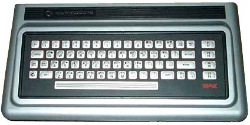
The ULTIMAX mode of the C64 is an emulation of the Japanese CBM release called the "MAX". It is a predecessor of the C64 with only 2K of RAM, a VIC-6566, and a membrane keyboard. It had no kernel or BASIC of it's own and everything had to be supplied on cartridges. Several of the games for this system (1982 vintage) were rereleased in the U.S. and elsewhere as C64 cartridges. They were developed (or at least published?) by HAL Labs of Japan. Since the machine was also missing a character ROM, it was supplied by the cartridge. In emulation, this appears in the memory map of the VIC as $F000-$F1FF, but to the C64, it shows up as $3000-31FF (if you don't fiddle with the VIC bits, as the MAX had the VIC always looking at Bank 4). Rather than go through the trouble of this part, you can just copy the area from $F000-F1FF down to $3000-31FF and it works fine.
These versions have been discovered from different game collections I've run across over the years, some from the web, and some that people have sent me that saw this page. They were compared using a hex editor and disassembled for more information where required. All MAX games I have found will play on a C64 with a custom loader that sets $01 correctly and copies the VIC character data down to $3000. You need to patch the program code to change the LDA #$E7/STA $01 to LDA #$E5/STA $01. This appears in every cartridge and of course kills the software emulation on a real 64 if you don't patch it.
Changes to this page:
4/24/2003 - Original publishing
4/25/2003 - Added Mole Attack, Money Wars, Max
Basic, Super Alien. Added 3rd version of Omega Race, and
clarified the version differences in Radar Rat Race with
disassembly.
4/26/2003 - Added Mini-Basic, and another earlier
version of Clowns.
1/24/2004 - Added a 3rd version of Wizard of Wor, the picture of the
MAX, and some corrections.
10/25/2004 - Moved site to the C64PP!
11/28/2008 - Added the (not so recently) discovered Bowling and Gorf MAX carts.
Special thanks to Mat Allen (Mayhem) for his input and additional versions he contributed!
Avenger
There are 3 different versions of this that I have found so far. They first 2 are marked V.01 and V.02 respectively on the title screens and play identically. The code is very similar between them, but the offsets give away that it's definitely a reassembly from source. By shifting the code around, you can see that it has minimal changes. The third version, which I have dubbed V.03 is a completely different program and was likely redone for the C64 release. It is, however, still an ULTIMAX mode cartridge and should play on a real MAX.
Cart runs at $E000-FFFF.
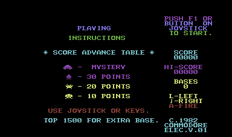
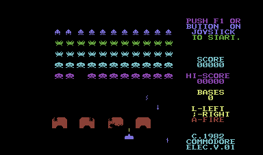
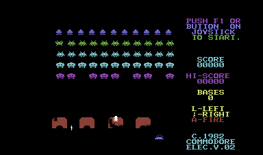
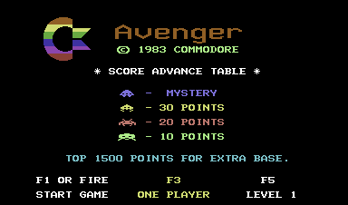
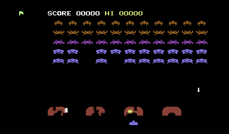
Billiards
Two versions of this game have shown up. V.01 has been floating around on disk for decades, and V.02 has recently been dumped from an official cart. It's unknown what the gameplay differences are, but it's a reassembly and not a patch, as the code differs quite a bit between the two.
Cart runs at $E000-FFFF.
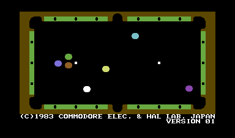
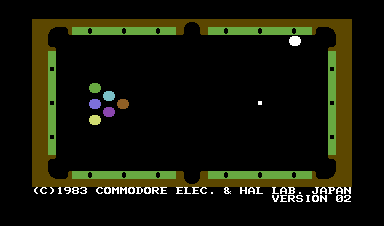
Bowling
This cart was lost in time, as it was never released outside of Japan. Mayhem located a copy of it in the mid 2000's, and it's the only version that has been found.
Cart runs at $E000-FFFF.
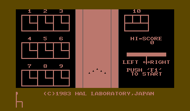
Clowns
There's now 2 versions of this found. The second one is unmarked, but it's obvious from the code that it's a patched version of V.01, so I'll call it V.02. There are 3 patches to the code, of which the effect on gameplay is unknown. It's likely it was just to add the Bally/Midway copyright.
Cart runs at $E000-FFFF.
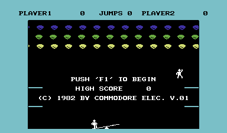
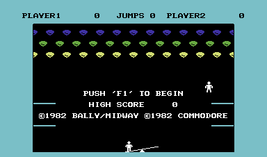
Gorf
This cart was lost in time, as it was never released outside of Japan in the MAX format, and even then it may be a prototype. The game was completely rewritten for the release of the C64 in the US. A copy of this showed up in early 2008 from a user that sent it to Mayhem for dumping. Although it did have an official-looking MAX label, there were wires sticking out of it like a prototype, and this is the only one ever found. I've included screenshots of the rewritten C64 cart for comparison.
Cart runs at $E000-FFFF.
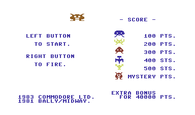
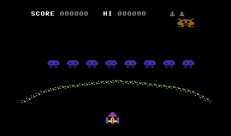
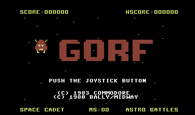
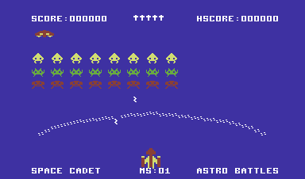
Jupiter Lander
There are 2 versions of this floating around. The main difference is that one has a title screen and one does not. I'll call the one without the title screen version V.01 and the one with the title V.02. There are some text positioning and color differences between them as well, but I can't detect a difference in the gameplay. It is a series of patches and not a reassembly from source. During play, both versions are identical in color and gameplay. A fun note about this game is that is "borrows" the musical sequences from the 1980 Nichibitsu arcade game "Moon Cresta".
Cart runs at $E000-FFFF.
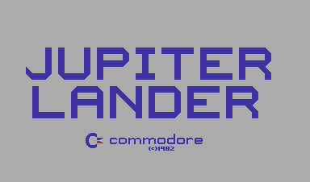
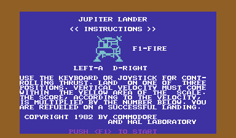
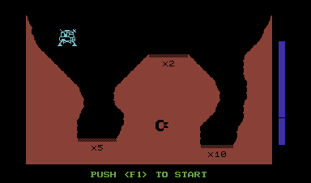
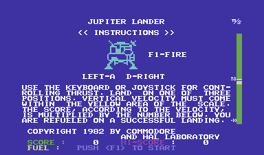
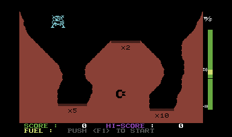
Kickman
I have found 2 versions of this game, one version marked V.02 and another that's quite a bit different that I'll call V.03. The original V.02 version has slightly 'simpler' graphics and music and features a black background instead of white. Also, it plays completely different music. If someone has run across V.01, please send it to me for analysis. The later version is the C64 release with the Bally/Midway copyright
Cart runs at $E000-FFFF.
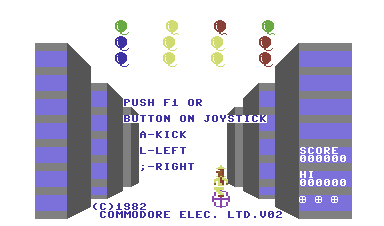
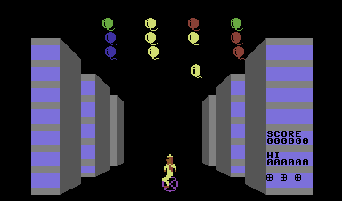
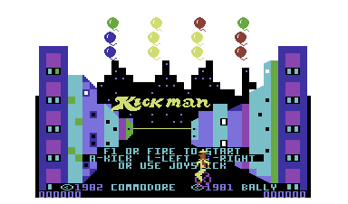
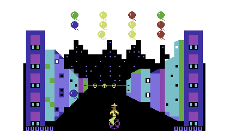
Le Mans
I have only found one version of this one so far. It is unmarked, so I'll call it V.01.
Cart runs at $E000-FFFF.
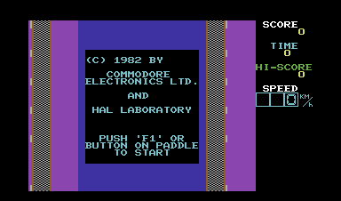
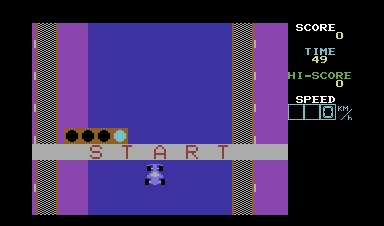
MAX Basic
This one will not run in software MAX emulation on a real C64, but the actual cart probably does. The reason for this is that the cart itself had the 2K RAM underneath it's ROM, so it twiddles $01 constantly to accommodate this. This wouldn't be very useful on a real C64, anyway. ;)
Cart runs at $E000-FFFF and $8000-9FFF. (16k)
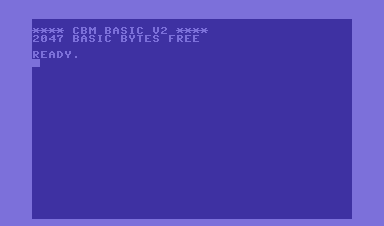
Mini-Basic
This one will run on a C64 in software-MAX mode, but again isn't real useful. Note from the screenshot that you get all of 510 bytes to work with (!).
Cart runs at $E000-FFFF.
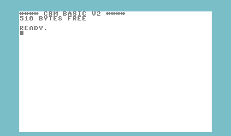
Mole Attack
This one is marked V.01. I haven't seen another.
Cart runs at $E000-FFFF.
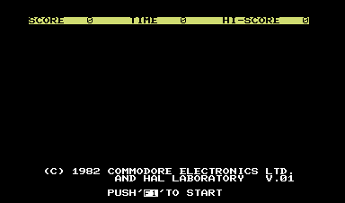
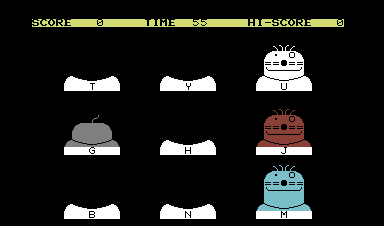
Money Wars
This one is marked V.01. I haven't seen another.
Cart runs at $E000-FFFF.
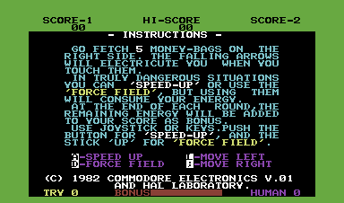
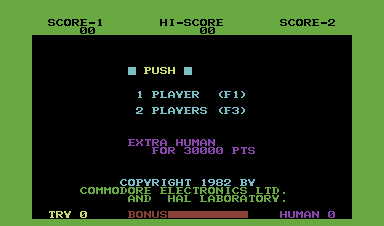
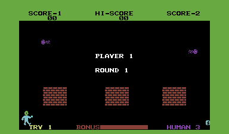
Music Machine
I have only found one version of this one so far. It is unmarked, so I'll call it V.01.
Cart runs at $F000-FFFF. Only 4K on this one...
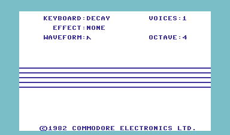
Music Composer
I have only found one version of this one so far. It is unmarked, so I'll call it V.01. This one is listed everywhere as "Music Composer" even though in the title screen it's identified as "Music Maker". It's also on CBM's part list as this wrong title, as well. Is there another version?
Cart runs at $E000-FFFF.
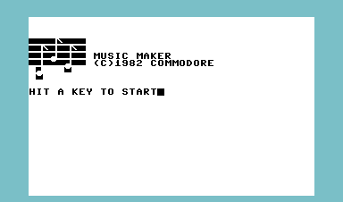
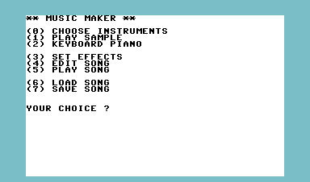
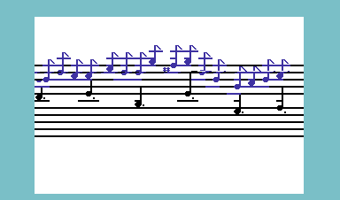
Omega Race
There are now 2 version of the MAX-oriented cartridge here, thanks to another variation sent to me. I don't know how to sequence these as far as dating, because they all 3 differ greatly. The one (that I had originally called V.01) looks to be more advanced than the V.02 that I was sent, since the latter has the plainer C64 character set and the less attractive white MAX-style background. This third variation is a C64 release of this that is NOT a MAX cart, as it runs in the usual C64 cartridge space of $8000-9FFF. I have put screenshots of the non-MAX version for comparison anyway. I have called the version that is marked V.02 (makes sense, eh?), the unmarked and more attractive-looking one V.03, and redubbed the C64 $8000 version V.04. These are all definately a reassembly and not just patches, and the 64 version plays differently. Also, look how the control keys have slightly changed between versions...
MAX carts run at $E000-FFFF, the C64 version at $8000-9FFF.
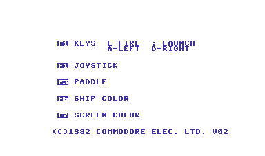
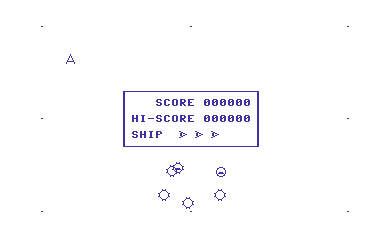
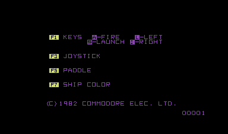
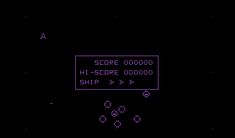
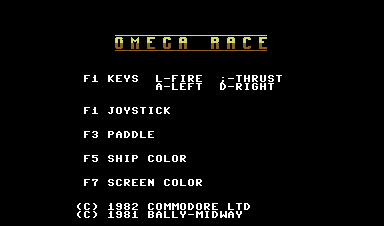
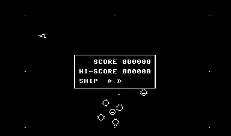
Pinball (Spectacular?)
I have only found one version of this one so far. It is unmarked, so I'll call it V.01. It is somewhat unusual in that it is 12K, so it resides as not only the usual 8K MAX program at $E000-FFFF, but also another 4K chunk at $8000-8FFF.
Cart runs at $E000-FFFF, and $8000-8FFF.
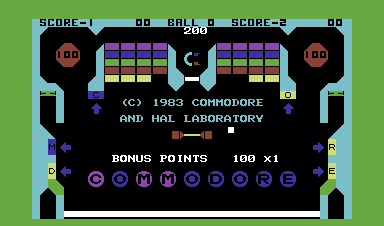
Radar Rat Race
This is CBM's clone of Rally-X. This is a fun one because I've found several different versions of this game, but all of them are identified as V.02. For clarity, I'll call the one that has been verified to be an authentic MAX cart as revision V.02a and call the others V.02b and V.02c.
Version V.02a is the one that's verified to come from the Japanese release, and has the green graphics. Between 02a and 02b, some graphics have been changed to white, and from 02b to 02c there are patches that juggle the carry bit and accumulator during an INC and subsequent DEC to $FE01,X. On a real MAX, these won't have any effect, because this is not RAM, it's a cartridge ROM, so $FE01,X can't be changed. I guess they fixed the bug with this patch. My earlier observation that the initial cheese maps were different was incorrect. I'm still not positive what this code does. I've patched it so it changes the border color when it runs and it happens fairly often, but it isn't obvious what it corresponds to, but my gut instinct is that it has something to do with how your rat decides to change directions when you hit a wall and aren't operating it with the controls. I have omitted the screenshots to V.02c since they are identical to V.02b.
BTW, here is a disassembly of the changes from 02A/B to 02C...
dump 02A/B:
$e24b FE 01 FE INC $FE01,X
-
$e269 DE 01 FE DEC $FE01,X
dump 02C:
$e24b 20 80 FF JSR $FF80
-
$e269 20 87 FF JSR $FF87
$ff80 BD 01 FE LDA $FE01,X
$ff83 18
CLC
$ff84 69 01 ADC #$01
$ff86 60
RTS
-
$ff87 BD 01 FE LDA $FE01,X
$ff8a 38
SEC
$ff8b E9 01 SBC #$01
$ff8d 60
RTS
Cart runs at $E000-FFFF.
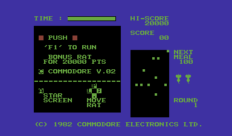
Road Race
I have 2 versions of this, identified as V.01 and V.02. It is a reassembly from source with a patch in it. The only gameplay difference I can identify is that the engine makes a different noise. It has a lower rumbling sound in V.01 than V.02.
Cart runs at $E000-FFFF.
Sea Wolf
I have only run across one version of this game, and it's unmarked, so I'll call it V.01.
Cart runs at $E000-FFFF.
Slalom
The only version found is V.02. Let me know if you run across V.01. It has great music for it's time and is an obvious clone of the Taito arcade game "Alpine Ski". This has an even stranger memory architecture than Pinball, as it uses the usual MAX area at $E000-FFFF, but also $8000-91FF. (Yes, that's an extra 512 bytes, and it uses the extra space for some of the text display, so it isn't a mistake.)
Cart runs at $E000-FFFF, and $8000-91FF. (12.12K)
Speed/Bingo Math
I've only found one version of this game, marked V.01.
Cart runs at $E000-FFFF.
Super Alien
This one is marked V.01. I haven't seen another.
Cart runs at $E000-FFFF.
Visible Solar System
I've only found one version of this cart, and it's unmarked, so I'll call it V.01.
Cart runs at $E000-FFFF.
Wizard of Wor
There are now 3 versions of this game uncovered- an unmarked version we'll call V.01, V.02, and the non-Ultimax C64 rerelease. The differences between V01/V02 are that you start off in a open-walled area and it has the Bally/Midway copyright. Since the Bally copyright versions are usually the C64 re-release, it's likely what I have marked as V01 here is later that V02. Both this version and the later remake were both released in the US. It is a reassembly from source code and not a patch. The C64 $8000 version was totally rewritten and shares none of the same code that I can see.
MAX cart runs at $E000-FFFF, C64 rerelease
runs at $8000-BFFF.
Copy Protection
V-MAX!
Originally documented by Pete Rittwage in 2005
See here for extensive extra research from LordCrass into the extra protection checks in some games. Copy Protection was by Harald Seeley in 1985-1988?
Harald contacted me recently and was kind enough to share these additional notes:
*) Later titles used tracks with super short syncs that are missed by nibblers (which we noticed on later V3 titles)
*) Later titles used a simple form of Huffman-coding to get extra data on the disk.
*) On some titles, they would randomly insert extra syncs on tracks that were checked for position and length (this is probably what the extra checks are on DOTC)
*) They checked for extra drive RAM in the protection by using mirror location tricks. :)
*) They did use bad GCR in early titles not knowing it would cause compatibility issues with later drives. He said they left it in the loader track (20). This is why when we correct or "simulate" bad GCR it ruins this track.
*) They definitely intentionally store more info than will fit on a track at 300rpm.
*) They never checked track sync. This seems to be untrue- Paperboy is checking sync on tracks 31-42 and others have been found.
Version 0
This appeared in the first V-MAX! title released, Star Rank Boxing. It has nasty checksum checks throughout the game and appears to have some byte counting on a couple of long tracks. I haven't been able to make a copy that will pass the very last protection check that it does before the game starts. It is all normal CBM DOS sectors.
Version 1
This is used in some Activision games and is mostly easily copied and works in VICE. A couple titles have an extra byte counting protection check that still fails. It uses normal CBM DOS sectors.
Version 2
There are 2 variations of this used on the Cinemaware games and a few other
titles. What we call 'V2' are usually identified by the lack of any directory entries other than "!".
The first variation has a single EOR'd section of code on track 20 that starts with big run of $5A, then a single EOR'd section of loader code followed by a checksum calculation. These disks use regular CBM DOS sectors. This variation to is difficult to get a proper read of track 20, because while it has no sync, it has a bits of data that is actually ten '1' bits in a row. This foils copiers because the drive circuitry *sometimes* detects this as a sync (a BIT/BVC branch combination has a 5 CPU cycle jitter) and reframes the data. If you are persistent enough, you can get a good read of these and they will remaster and work in the emulators. Defender of the Crown also seems to have a byte counting check like the earlier V-MAX! v0 on the back side, which I cannot get to pass.
The second variation has a track 20 that starts with somewhat less $5A and has 2 sections of EOR'd code. It uses all new custom V-MAX sectors instead of regular CBM DOS.
Version 3
This is the version that appeared later on Taito games, etc. I have found two variations of this, one with later tracks (every other one) that have very short syncs and one that doesn't. Both work in VICE now as of the my newest update of the MNIB reading routines. Both contain V-MAX sectors of variable length and some contain tracks of CBM DOS sectors also.
All V-MAX! titles I have can be remastered if you slow the drive motor down to 297.5 RPM. Y
Copy Protection
Vorpal: Early Versions
This protection is seen on many high-profile releases by Epyx from 1985-1987. Summer Games II, Winter Games, World Games, Rescue on Fractalus, Barbie, G.I. Joe, Hot Wheels, etc.
The protection was written by Scott Nelson.
The copy protection is checked on track 20. Starting from sector 1, the number of bytes between Syncs are counted for the next 17 blocks. Also, the first byte triggering the sync is read (in other terms, the last byte until the sync signal is registered). If any of these values don't match the expected values, the copy protection failed.
| length | last byte b4 sync | |
| Header sector 1 | $11 | $af |
| Data sector 1: | $4d | $ff |
| Header sector 2: | $11 | $af |
| Data sector 2: | $4d | $ff |
Copy Protection
Vorpal: Later Versions
Last Updated: 10/12/05
This protection is used to protect later Epyx games such as California Games, Legend of Blacksilver, Championshiop Wrestling, "The Games" Summer and Winter Editions, LA Crackdown, and Street Sports Basketball.
These disks contain several tracks (every other one for at least tracks < 18) that have no sync signal. I have partially disassembled the Maverick copier and it is trying to detect sectors on these syncless tracks by searching for the pattern $55 or $AA. We cannot detect a normal track cycle in these tracks by normal means due to unknown reasons. My educated guess is that either the tracks contain data written at different densities (doubtful, since there isn't any bad GCR) or it has several sectors that are "sliding" (bitshifted from one another) due to lack of framing.
Copy Protection
XEMAG 2.0
This protection contains a "fat" track on tracks 35 and 36, meaning it is one track that is twice as wide, or to explain another way-- the exact same data on two tracks lined up perfectly.
This protection will work in VICE since it aligns all tracks, but on a real 1541 it is difficult to remaster due to the lack of hardware assistance in laying down tracks exactly aligned. It can be done with the proper drive speed and timings.
C64 Preservation Project
C64 Preservation Project
Of course, to reach these goals, we need your help. This software exists only on magnetic media from the 1980's, and as such has been disappearing into attics, yard sales, and landfills for 35 years. Floppy disks were also never made to last a lifetime, as I have found in purchasing them in auctions. Even disks that were stored and cared for by their owners all these years have pretty high failure rates, including some where the magnetic material actually wipes right off, making the drive heads filthy.
You can help preserve them for our own and future generations in a number of ways, so please use the contact form for details and we'll let you know how you can help.
C64 Preservation Project
Frequently Asked Questions
We cannot legally redistribute the games, as we are not the copyright holder. Most of the games we have preserved already have existed on the internet in other forms for over a decade, but still we cannot open up any sort of legal implications.
Q: Why should I help you? You're just hoarding the ROMz!
If you feel that way, you shouldn't. Do a little research on me. There are other teams that contribute and therefore have access to the collection, such as GameBase64, HVSID, Stadium64, and the various tape and compilation sites, so the data is also contributed for use in those projects. Somehow, archive.org can also get away with this, and you can find them there.
Q: How do I use the images I get back?
All modern emulators work with provided G64 images, which are a raw representation of the GCR data on each track. There are some tougher protections that won't run due to the inexact way 1541 emulators work. There are also some images that work on the emulator that can't be put back on a real disk.
Q: What equipment and/or cables do I need to dump my disks?
You need a 1541, 1541-II, or 1571 disk drive and an XAP1541, XEP1541, or XMP1541, or XUM1541 (ZoomFloppy) cable. This cable has both the standard IEC connector as well as the direct parallel connection to the VIA chip inside your disk drive. You can build them yourself using the guides on Joe Forster's Pages or purchase them from his shop. Note with the latter that you still have to solder in the parallel cables to the VIA chip inside your drive, but the cables are top quality and you'll save a lot of time.
You can also just use a 1570/1571 and a ZoomFloppy without any parallel connection. This will use the SRQ/Burst serial connection instead of parallel.
Q: You already have all the games I own in your database. Should I bother to redump them or send them to you?
Yes! There are many different reasons.
* Not all disks even with the same publisher, region, and disk label have the same protection. The disk we have might be a different version, from a different region, from a different mastering run, or from an alternative publisher (like a budget release). The disk we have might even be bad and we don't know it yet.
* Commodore's checksum for DOS sectors is not strong (it's a simple rolling XOR) and prone to flag a sector as good when it is not, and heavily protected disks are even worse since they don't even have these checksums. This can happen on old disks that have deteriorated and caused some of the flux transitions to weaken. The only way we have to verify that an image is "good" is to compare it to other dumps of the same exact disk.
C64 Preservation Project
Project History
These pages represent a project that I have thought about and started at different times for years, but never previously had the inclination to fully organize. I am a Network Engineer from Augusta, Georgia, USA that grew up in the 8-bit computing era during the reign of the Commodore 64.
My original goal was probably that of a lot of retro users. I wanted to recollect all the games I had for the C64 when I was a kid, which for most part were games that I either copied (or later cracked) from friends in the Northeastern Ohio area. It always bothered me when I got a copy of a game where the text was edited with silly "BROKEN BY" phrases, so I would always remove them and put in the original text. Later, we were inundated with the "intro demo" which usually saw the loss of the title screens and original loading graphics. I sought to remove those as well.
After discovering the MNIB project, I decided it was better to just try to collect all the games as they were originally distributed. That way you avoid any errors or missed protection checks that the 'cracker' left behind. This opened up into the can of worms you see on the site today. :)
C64 Preservation Project
Emulators and Patches
VICE
There are two main advantages to VICE- it's open source and therefore portable, which means you can run it on lots of different computers, operating systems, and processors. It also emulates a lot of extra hardware such as ethernet adapters, RS232 adapters, etc.
CCS
CCS is interesting because it's interface is built with the C64 look and fonts, so when you run this emulator, there is no abrupt change back to Windows to configure it or change settings - it's more like a C64 with the most advanced freezer cartridge ever. It's only available for DOS/Windows, though.
C64 Forever
C64 Forever bundles the emulator, a front-end, and games, and wraps it all into a package that makes it very easy for the beginner to get started with C64 emulation. The Express Edition is free, and the upgraded versions are quite reasonable.
Hoxs C64
Hoxs is a very advanced emulator featuring cycle-exact emulation of most (all?) hardware in the C64 and disk drive. The only real disadvantage is that it only emulates a PAL C64, so it leaves out us NTSC users. Hopefully that will be added one day, as it's an impressive emulator.
Micro 64
Micro 64 is a very impressive emulator written by Bero. It boast "half-cycle" emulation of the C64 and disk drive. Like Hoxs, it seems to emulate only a PAL C64 at this time, but the tweaks and fine details of the options are incredible.
Frodo
Frodo is an older emulator that hasn't been developed actively in a while, so it lacks modern features such as low-level drive emulation and cycle-exact video emulation. The author has recently said he is rewriting it for Frodo V5, however, so keep an eye on it.
C64 Preservation Project
The PetSCII Playground
I've put up and experimental "telnet" BBS that uses the Commodore PetSCII character set exclusively. (That means if you try to access it via a regular telnet client on a PC, such as PUTTY, all you'll see is trash.) It is a multi-user system that uses Commodore color and graphics (PetSCII) for all of it's display routines.
The BBS does not run on a real C64, because it would be difficult to make that multi-user unless I did it with Lunix and a SLIP connection, which I haven't experimented with yet. I'm sure it could be done, but I went with what I had handy, which is Linux on a PC...
The client, however, must be a C= compatible CG terminal program. I used to use CCGMS 5.5 running on Vice in Linux with a null modem (software) to give my C64 a shell that I can telnet from. To get from there to the BBS, you must make sure you are running telnet as '8-bit clean' and in 'binary' mode. Now, you can use the fantastic CBMTerm that saves a whole heck of a lot of trouble. He was even kind enough to put me in the address book, since he used my BBS to test with. :)
Please e-mail me and tell me what you think. There are 3 parts to the BBS that are functional. The [W]ho function lists all previous "callers". The '[G]raffiti wall' will let you enter messages to other users. The [P]etSCII gallery lets you watch color movies-- very cool
.Oh, the important part---
Using CBMTERM: Just pick 'PetSCII Playground' from the built-in address book. The only thing to note is that you'll want to use at least the 'medium' setting to view the movies, or else they go by so fast you miss the animation. A big part of the old C= BBS experience was the animation of menus, etc.
C64 Preservation Project
Add Your C64
Fill in what you know, then send it by e-mail to peter@c64preservation.org. Only the owner name and the case serial number are required — everything else helps but is optional.